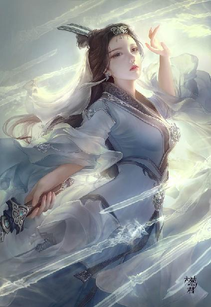

第73集·惟吾德馨
汉国篇（25/28）
出版日期：2018-04-02
【本集内容简介】
昔日太后，今朝为奴，垂帘听政多年的吕雉委身侍奉程侯。她逆来顺受的外表之下，隐藏着什么秘密？
程宗扬被东瀛忍者刺杀中毒，解药居然是他寻找多日的……
武帝秘境内各方势力重重，食人魔花肆虐，程宗扬趁机清扫、收编各方势力。终于，帝陵大门开启，迎面遇上的却是……
※ ※ ※ ※ ※

封面人物：卓云君
覆盖洛都的大雪已然融尽，街市上虽然还没有完全恢复往日的繁华和喧闹，但也已经车来人往，生机渐复。尤其是通往码头的上津门一带，成群的车马满载着刚刚从洛水运来的货物，川流不息地运往城中，人喧马嘶，更显热闹。
程宗扬随着人流策马而行，却丝毫无心留意周遭的景致。云丹琉一声呵斥，他才想起自己忘了一件大事——按照约定，自己本来应该在月初就赶赴舞都，与云如瑶完婚。事实上自己也是这么安排的，那时自己已经着手撤离，可没想到临行之前，自己为了满足赵合德的心愿，带她入宫一行，却撞上宫中剧变。天子遇弑，群魔乱舞，局势就此急转直下，洛都一片大乱，自己陷身城中，连日来在生死之际搏命，稍有不慎就有覆亡之危，早把婚事抛到脑后。
云如瑶在舞都左等右等不见新郎官，派人到洛都打听，正赶上封城，内外音信断绝，传出的消息只说城内打得厉害，一会儿说吕氏杀了天子，一会儿说诸侯兴兵屠灭吕氏，一会儿说昭仪弑君，大司马杀了皇后，一会儿又说边军入京，与大将军打得不可开交。总之各方势力杀来杀去，直杀得血流成河，连武库和皇宫都给烧了。
云如瑶在舞都一日三惊，直到王孟赶来，众人才知道发生了什么事。得知自家相公安然无恙，云如瑶忧心稍解。她原本想与延香等人同行，但小郭靖为父奔丧耽误不得，她又一向体弱多病，经受不住途中的颠簸，于是双方分做两路，延香等人昼夜兼行，云如瑶则与哈迷蚩等人随后赶来。
云丹琉与城外的族人联系上之后，听说姑姑正为婚事担心，立即起身前往舞都。幸好双方未曾错过，在途中相遇，云丹琉一直把姑姑护送到伊阙，借口打理住处，匆忙返回洛都，提醒程小人别忘了正事。
“姑姑的婚事是我们云家的头等大事，若让叔叔们知道，你把婚事都抛到脑后，哼哼！”
“开什么玩笑！”程宗扬肃然道：“这种事情能忘吗？洛都的事情你也看到了，但凡我能脱开身，婚事早就办了。”
云丹琉没好气地说道：“那边的新房本来都布置停当了，因为你的事，张挂好的喜缦全拆了，发出的喜帖也收了回来。这次是三叔亲自来送，除了小姑姑，还带了五车的嫁妆。”
程宗扬干笑两声，抽空向秦桧使了个眼色。秦桧心下会意，策骑上前，略略落后半个马位。
“赶紧准备房子！”程宗扬焦急地压低声音道：“越快越好！”
“朝廷准备将襄邑侯府赐给主公，作为舞阳侯邸。”
吕冀的襄邑侯府是洛都一等一的豪宅，可用来当婚房……
“会不会不太吉利？”
秦桧应声道：“襄城君府亦可。”
这主意不错。吕冀与孙寿各有宅邸，隔街相望。吕冀刚刚死于非命，用他的故宅办婚事嫌不吉利，孙寿的襄城君府倒没有太多忌讳。
吕刘之乱，给洛都的权贵来了次大洗牌，空出的宅院着实不少，但宅院的主人大都像吕冀一样横死，说起来全是凶宅。可仓促之间也没有更多可以选择的余地，襄城君府已经是最好的选择了。
“就这么办！时间耽误不得。你组织洛都的商家，来一次大采购，把能包的全包出去，花钱不要紧，只要能配上如瑶的身份，花多少都好说。还有，把账目给我一份。”
秦桧拿出记账的簿册递了过来，然后领命而去。程宗扬在马上信手翻看，正好几名短打扮的洛帮帮众赶着一群肥猪入城，行人纷纷避让。程宗扬策马退开，险些撞到一名行人，连忙勒住马匹。
等洛帮的帮众赶着肥猪走远，一队胡人从侧巷出来，他们牵着马匹，背着行囊，簇拥着几辆大车，其中三辆载的全是草秣，像是要赶远路的样子。
出城时，守门的隶徒登车搜检，掀开车帘时，程宗扬看到车上坐的全是披发的胡巫，连那位瞽目的琴师也在其中。
这些胡巫本是受吕巨君邀请而来，但在永安宫对峙时，他们主动退出，表示不插手汉国的内部纷争。因此乱事平定之后，霍子孟也没有多作追究，放他们自行离开。车上备了这么多粮草，看来他们是准备返回故乡了。
到了上津门外，程宗扬下马等候。半个时辰之后，一队打着云氏旗号的车马风尘仆仆地赶来。
云苍峰骑在马上，满面风霜，看到程宗扬便远远招手，倒没有因为他的失期摆什么脸色。
云三哥不追究，是他分得清轻重，不代表自己就可以视为理所当然。程宗扬迎上前去，施礼告罪，却被云苍峰打断。
“局势如何？”
“比预想中还要好。”
“谁继位？”
“定陶王。皇后垂帘。”
“皇后垂帘”四字足矣，云苍峰捋着胡须频频点头，“好！好！”
程宗扬笑道：“今后可是要跟云老哥做邻居了。”
“哦？”
“托云老哥的福，我在平叛时立了点小功，朝廷准备封我为舞阳侯。”程宗扬微笑道：“实封的列侯。”
云苍峰大喜，“所封何地？”
“大致在首阳山到舞都之间。地方倒也不大，估计一二百里的样子。”
云苍峰大笑道：“好个百里侯！老朽是不是该给程侯爷行礼了？”
“云老哥，你可别折杀我了。”
两人说笑几句，程宗扬道：“我已经准备好谱牒，完婚之后，便奏请朝廷，封如瑶为舞阳侯夫人。”他着重说道：“正夫人。”
云苍峰老怀大慰，“好！好！好！”
云家几位兄长为了抚养这位自小多灾多难的幼妹，也是费尽心血，如今终于有个上好的归宿，云苍峰心情激荡之下，不禁红了眼圈。
他掩饰地抹了抹眼角，笑道：“如瑶在后面，你去见见她吧。”
车队中间是一辆四轮大车，一名御手坐在车前，后面哈迷蚩穿着一身破旧的皮袍，盘腿坐在车门外，仿佛一头掉光毛的老狼。
“哈大叔！”程宗扬远远便问道：“你的腰怎么样了？”
哈迷蚩独目露出一丝暖色，“好了。”
他被送到舞都之后，云氏倾其所有，各种名贵药物不要钱地狂泼猛撒，总算把他救了过来。投桃报李，这一路哈迷蚩不顾严寒，寸步不离地守在车上，直到把云如瑶送进洛都。
“进去吧。”哈迷蚩侧身让开。
车外张着纱帷，薄得根本挡不了风霜。然而掀开纱帷，进入车内，程宗扬才发现云老哥竟然把那只蛋屋拿给了妹妹。那只蛋屋材质奇异，轻如鸿毛，却坚如钢铁，又是柔性材质，张开之后紧贴着车厢四壁，周遭没有一丝缝隙，御寒效果极佳。
一别数月，云如瑶容颜犹胜往昔，她优雅地起身福了一福，带着一丝浅笑柔声道：“公子一路辛苦，请入内用茶。”
放下纱帷，合上屋门，云如瑶美目立刻红了，叫了声：“郎君！”便扑到程宗扬怀中，抽泣道：“你这个没良心的……吓死我了……”
程宗扬揽住她的腰肢笑道：“大难不死，必有后福。你瞧，我不是好端端的吗？傻丫头，别哭了。”
云如瑶在他身上四处摸着，“他们说你受了伤，伤在哪儿了？”
程宗扬断裂的掌骨已经愈合，手腕输血时切开的伤口也只剩下一道浅浅的疤痕。却是云如瑶摸索时，无意之中碰到他胯下一柱擎天，被吓了一跳。等反应过来，云如瑶啐了一口，“果然是个没良心的……”
一边说却又一边张开纤手握住，半嗔半恼地横了他一眼，眉眼间流露出无穷的风情。
云如瑶眼泪还在，那种含羞带怨的俏态惹得程宗扬心头一团火热，他搂住云如瑶的纤腰，俯首吻住她的唇瓣，双手在她身上熟稔地来回游走，不多时，便把她摸得浑身发软。
云如瑶玉脸越来越红，一边唇舌相接，一边下意识地挺起下腹，在他腿上柔柔摩擦着。程宗扬按捺不住，一把抱起云如瑶娇弱的身子放在床上，把她摆了个伏榻挺臀的娇态，然后不顾她的挣扎，一手掀起她的裙子，扯下她的小衣，便挺起怒胀多时的阳具，对着她白生生的嫩臀捅了进去。
云如瑶蜜穴早已湿透，火热的肉棒沿着湿泞的蜜腔长驱直入，轻车熟路，一捅到底，直抵花心，干得云如瑶花枝乱颤，险些叫出声来。
这是在自家车上，外面就是兄长和家中的仆从，自己一个未曾出嫁的闺中小姐，若被人听出动静，可要颜面无存。云如瑶紧张得心脏都快跳出腔子，她一手掩住红唇，一手想推开这个坏透了的情郎。可惜她那点力气，落在程宗扬身上直如蜻蜓撼石柱一样，哪里能推动分毫？
程宗扬一口气连干十余下，干得云如瑶浑身瘫软，再没有一丝力气，然后扭头笑道：“雁儿，过来让老爷亲一个。”
雁儿咬着唇瓣立在车厢一角，俏脸满是红霞，闻言拼命摇头。
程宗扬失望地叹了口气，“算了，算了，你给我倒杯茶吧。”
雁儿如蒙大赦，连忙倒好茶水，递了过来。
程宗扬抓住雁儿的手腕，把她横拖过来，埋头吻住她花瓣般的红唇。茶盏掉在地上，没有发出一丝声音，温热的茶水像珍珠一样四处乱滚，最后汇成一摊。
云如瑶紧紧咬住唇瓣，丝毫不敢作声，下面的交合却是如火如荼。两人干柴遇到烈火，哪里还能分得开？在车内抵死缠绵，鱼水交欢，以解相思之苦，虽然不敢放声，却别有一番偷情的趣味。
云如瑶久旷之躯，被情郎强行进入，强烈的刺激使她不多时便泄了身子。感觉到情郎的阳具依旧硬梆梆的，云如瑶不忍让他这么憋着，顾不得自己高潮余韵未消，勉强抬起腰肢，用湿腻的蜜穴套弄着他的阳具。中间由于再次泄身，蜜穴难以消受，云如瑶还主动献出后庭，好让情郎用她的菊肛来爽。
云如瑶浑身发烫，眉眼间犹如含着蜜汁，她一边卖力地挺动雪臀，一边听着外面的动静，一颗心紧张得仿佛要跳出腔子。前后两穴轮流侍弄，终于让情郎射了出来。云如瑶娇喘着停下微微发颤的身体，刚想放松一下，紧接着又发出一声惊呼。那根肉棒刚刚射完精，却赫然还在硬着，昂然挺立，丝毫没有软化的迹象。
云如瑶香软的身子让程宗扬舍不得放手，恋恋不舍地说道：“再来一回。”
云如瑶一手掩住雪臀，一边嗔怪地横了他一眼，一边唤道：“雁儿，你快过来。”
雁儿红着脸道：“不行，不行。”
“有什么不行的？你是我的通房丫头，快来服侍相公。”
“已经快到主子家了。小姐，婢子赶紧帮你打理，免得被人看到。”
程宗扬吃了一惊，“怎么这么快？”
他撩起车帘一角，果然已经到了通商里，自己的住处已然在望。
两人匆忙整理好衣物，赶在车马停下之前收拾停当。
程宗扬把账簿交给云如瑶，“这是近来的账目，头绪很多。你闲暇时翻看便是，可别累着了。”
云如瑶却道：“它还在硬着吗？什么时候才会软？”
“这个……还不好说。”
云如瑶忍俊不住，“好有骨气的小东西。若是一直硬着也好……”
程宗扬在她臀上拍了一记，“一会儿再让你尝尝厉害。”
下了车，云丹琉的白眼几乎翻到天上。程宗扬只当没看见，打着哈哈说道：“一跟瑶小姐谈起账目，就忘了时辰。云老哥，这边走。”
※ ※ ※ ※ ※
秦桧办事周到，一边派人接管襄城君府，一边抢先一步，将通商里的宅院腾出来，供云氏诸人暂时落脚。
云苍峰略做洗沐，便到厅中与程宗扬商谈。
京师之变已经传遍四方，舞都也收到刘建用天子名义所发的诏书，命他们起兵勤王。幸好霍子孟等重臣素孚人望，没有众人附署，各地大都静观其变，战乱才没有波及开来。
得知朝廷已经允诺废止算缗令，且将逐步取消抑商政策，将商贾列入良家，云苍峰抚掌道：“新君尚未继位，恩泽便惠及天下，此政善莫大焉！”
程宗扬笑道：“洛都的商贾十分配合，纷纷出钱出力，不然市面也不会这么快就恢复太平。”
“这便是人心！”程郑虽然面带倦意，精神却十分亢奋。长秋宫能撑过多日来的战乱，全靠他在外面筹措钱粮物资。尤其是武库被大火焚毁之后，长秋宫所用的军械补给，一多半都是他发动商贾同行，从市井间搜集来的。
而程宗扬出手同样不吝啬，已经由班超执笔，备好文牍，赶制印绶，只等封侯之后，便拜程郑为舞阳相，主管封地大小事务。
“我准备将七里坊再扩大一倍，”程宗扬摊开一份地图，手指在上面划了一个大致的范围，“由目前的区域，一直拓展到舞阳河。”
云苍峰敏锐地觉察出他的意图，“要设立坊市？”
汉国惯例，会在城中设立坊市，作为商业交易的场所。但程宗扬不准备遵循旧例。
“七里坊不会立专门的坊市。或者说……”程宗扬在图上一圈，“整个七里坊，乃至整个舞阳侯国，都是坊市。无论商贾百姓，都可以自由交易。”
云苍峰来了兴趣，“有如晴州？”
“比晴州更友善。”程宗扬道：“我们不但不会对商业进行任何限制，还会出台一系列措施，鼓励商业贸易。”
“说来听听。”
程郑笑道：“我来说吧。首先是取消商税。侯国境内所有交易，一律免税。无论交易税、通行税，全部取消。侯国对商业交易不进行任何干涉和限制，在全境范围实行自由贸易。”
没有税收的自由贸易，是云苍峰这样的商贾所梦寐以求的，但他并没有被如此优厚的条款冲昏头脑，而是追问道：“不收商税，如何维持？”
程郑胸有成竹，“我们可以自己经营产业。只要有商贾往来，衣食住行是少不了的。除此之外，首阳山的铜和木料，舞都的漆器和诸多手工，都是上好的货源。只要经营得法，完全可以支撑侯国的运作。”
“而且我们会疏浚河道，兴建码头，争取让千料以上的大船从云水直接驶入舞都。首阳山盛产药材、丝麻，还有玉料，可谓是一座宝山。只要通商便利，日进斗金易如反掌。”
云苍峰问道：“首阳山的铜料也要出售？”
云氏所拥有的两处铜山，早已矿源枯竭，一直设法寻找新的铜矿。双方虽然没有明说，但实际运作中，程宗扬拿出首阳山铜矿的一半股权交予云氏，实质上作为迎娶云如瑶的聘礼。云苍峰也早有打算，将首阳山的铜矿用来铸造铜铢，作为云氏商会的本金支柱。然而此时听来，自家妹夫似乎不打算拿来铸币？
“此事正要与云老哥商议。”程宗扬道：“我有一个想法，这两天也和程大哥商量过——我准备在侯国境内全面推行纸钞。”
“什么？”云苍峰吃了一惊。
“境内所有的交易全部采用纸钞结算。包括各类货物的交易，日常的饮食、住宿、出行，以及百姓缴纳的赋税——只要是用钱的地方，全都用纸钞！”
“如果百姓不用呢？”
程宗扬道：“在境内限制金银的流通。”
云苍峰手指敲着桌面，眉头紧锁，神情凝重。他亲眼目睹过程氏在宋国几处钱庄的运作，对于推行纸钞所能带来的巨大利益了然于胸。可是在一境之地全面禁止金银，推行纸钞，其中蕴藏的巨大风险也不可不知。
“其利虽大，可过犹不及。”云苍峰劝阻道：“境内交易固然可用纸钞，可一旦出境，纸钞便无可用之地。倘若我是外来的商贾，离境之际，势必会将手中的纸钞全数兑为钱铢，交易数额愈巨，需准备的钱铢数额愈大，频繁进出，反而会加大交易的成本。其次，钱铢行之日久，纸钞终究一纸而已。若是强制实行，境内百姓手中如有纸钞，必然会想办设法兑为钱铢，届时若出现纸钞面值低于钱铢，该当如何？”
程宗扬心下一沉，这也是他最担心的。毕竟金银是天然的货币，而纸钞完全靠信用支撑，如果出现纸钞贬值的苗头，风险会加倍放大，甚至影响到宋国纸钞的信用。为了七里坊一地，而赌上整个纸钞的信誉，那就得不偿失了。
程郑道：“起步之初，纸钞可以只用来结算。”
此举也未尝不可，但这样的话，纸钞就成为一种结算凭证，而失去其流通的意义，这可不是程宗扬想看到的效果。相比于风险，推行纸钞所能带来的利益同样巨大，这是自己绝不肯放弃的。
云苍峰见他还有些不甘，告诫道：“此举关系甚大，切勿操之过急。”
程宗扬摸着下巴道：“既然大家都担心风险，那么就按程大哥说的，在部分交易中试行，先看看效果再说。”
“路要一步一步走，饭要一口一口吃。”云苍峰笑道：“其实我看你在各地设立钱庄，采用纸钞周转资金的举措就不错。”
程宗扬苦笑道：“要不是因为这些钱庄，我也不急于在境内推行纸钞了。”
“哦？”
“云三爷可能还不知道，”程郑解释道：“此前因为算缗令，我们用钱庄的名义发行了一大笔纸钞，全靠着这批钱铢来支援长秋宫，方有今日。可如今朝廷废止算缗令，那些商贾闻风而动，不少人都有意兑回钱铢。此前秦班两位与霍大将军商议，想兑换朝廷府藏的钱铢，也是担心这笔亏空不好弥补。”
“亏空了多少？”
“眼下账目还未全数厘清，不过三五十万金铢是有的。”
云苍峰眉头拧紧，良久才缓缓松开，“三五十万金铢，换取皇后垂帘，裂土封侯，也不算太亏了。”
程宗扬叹道：“话是这么说，可眼下饥荒难度。”
程郑道：“其实秦先生的献策，颇有可取之处。”
云苍峰道：“秦先生出的什么主意？不会是重新算缗吧？”
程宗扬苦笑道：“如果重新算缗，我怕明天就有人出来清君侧。”
程宗扬很清醒，刘骜暴死，逐鹿各方却无一人打着为天子报仇的旗号来占据大义，甚至叛乱平定之后，各方还有意无意地合谋，隐瞒下吕冀弑君之事。为什么？正因为刘骜的算缗令和均田令，把汉国的商贾、豪强、世族全都得罪光了，不知道有多少人巴不得他死。别看自己如今手握两宫，拥立天子，占据大义的名分，要是重提算缗令，立马就是第二个刘骜。
程郑道：“秦先生的意思是，以纸钞充少府，暂解燃眉之急。”
国库挖不动，就把主意打到天子的口袋里，这是欺负天子尚幼，要把他的零用钱全掏走啊。
云苍峰立刻道：“此举不妥。”
“云老哥说的是。我也觉得不太妥当。”程宗扬道：“一来传扬出去，好像是在欺负天子一样，名声不好听；二来少府在先帝手里已经花得河干水尽；三来皇后家底不厚，眼下刚刚垂帘，内廷外朝的赏赐都少不了要用钱，若发些纸钞下去，面上也不好看。”
云苍峰道：“那些逆贼的家产呢？不说旁人，单是襄邑侯，便家赀不菲。”
“那可是上好的肥肉，不知道有多少人在盯着。况且那帮叛逆先烧了武库，又在宫中放火，烧了平朔殿，连带两宫内外都打得稀烂，京师各军死伤惨重，朝廷比我还焦头烂额，就指望拿这些逆贼的家产来填补亏空呢。”
云苍峰道：“不如让宁大司农来盘盘朝廷的家底，看能挪出多少来。”
“别提了。老宁八成是属耗子的，一溜烟就跑得没影儿了。”
说起宁成，程宗扬就心里郁闷。自己原以为宁成听闻皇后垂帘，会主动现身，谁知道他一躲就躲了个彻底，整个人就如同凭空蒸发了一样，没有半点音信。除了几份伪造的文书，什么都没留下，连影子都摸不到。
云苍峰叹道：“你这是让我卖家底啊。”
程宗扬讪讪笑道：“我这也是没办法，不求云老哥，还能求谁呢？”
云苍峰盘算许久，“应急的话，最多能给你凑出来十来万金铢。时间不超过一个月。”
“这就好办！”程宗扬终于吃下一颗定心丸。
当初借着算缗令的东风，自己在汉国投入了超过三百万金铢的纸钞，全部兑换一空。结果废止算缗令的消息传出之后，立刻就有人拿着纸钞来兑换钱铢。洛都之乱前后打了近十天，自己手里的金铢流水一样花了出去，回本却遥遥无期，短时间内根本无法全额兑付。当然，这些钱不是白花的，真要拿着账目找朝廷报销，朝廷也必须得认。问题是眼下朝廷自己都捉襟见肘，想拿到现钱，同样需要时间周转。
程宗扬起初并没准备大办婚事，但现在看来，不大办是不行了，即使为了彰显自身实力，这个婚礼也必须办得热闹、气派。
双方谈过正事，云苍峰不顾程宗扬的苦苦挽留和自家幼妹的满眼幽怨，强行带着云如瑶回到城郊的庄园。
“还未过门就搬过来住，成何体统！”
“是是是！大舅子你说的是……就住一晚行吗？”
云苍峰虎着脸拂袖而去。
程宗扬只好与云如瑶依依惜别，然后打起精神，直奔尚冠里。
“大将军，这事你可得帮忙！”
霍子孟执杯慢悠悠饮了一口，然后一脸老成地拿起那张大纸帖子，翻开看了一眼，接着一口水喷了出来，“啥？你让我当媒人？”
“大将军德高望重，媒人的事全指望你了。”
“说笑的吧？我当媒人？呵呵呵呵……”霍子孟很想把帖子拍到他脸上。自己什么身份！什么地位！当媒人？你以为你是太子爷吗？
程宗扬一脸无辜地说道：“我也不想来劳烦大将军，可谁让我结亲的事让皇后娘娘知道了呢？娘娘说这是喜事，尤其是前些天出了些乱子，正好需要件喜事来冲冲喜，还特意指名请大将军作媒。”
霍子孟嘴巴都快歪到后脑勺了。赵皇后的性子自己还不清楚？从来都不是这么没分寸的人。倒是这小子脸皮厚得要死，他若在皇后面前进些“谗言”，假的也变成真的了。
不过霍子孟真正在意的，是此举背后的用意：天子驾崩，正值国丧，偏挑这时候大张旗鼓地办喜事……合适吗？
肯定不合适啊。这分明是在打天子的脸。就算装进棺材了，那也是天子。这边刚死了当家的，那边就敲锣打鼓娶亲办喜事，天家的脸面还要不要了？
难道他不懂国丧期间，禁止民间嫁娶？可就算他不懂，他身边的人也不会全都不懂吧。阳武侯这么玩，置天子于何地？
霍子孟越揣摩越觉得此举来头甚大。天子尸骨未寒，丧礼就不作数了，往后是不是连庙号也没有了？甚至于前面几位先帝，是不是都要去掉尊号？以此昭告天下，帝统重归戾太子一系？
动摇国本啊。万一生乱，便是不测之祸。
可若是硬顶的话，谁会领情呢？那几位先帝都已经是死人了，死人能领什么情？至于活着的人里面，有几个会为刘骜仗义死节的？刘骜秉政不过数月，就几乎将天下人都得罪光了，天知道有多少人想往他坟上吐口水呢。再说了，皇后都点头了，自己一个外人还瞎搅和什么呢？
“媒人这活儿……”霍子孟为难地说道：“我不熟啊。”
“没事，”程宗扬道：“鸿胪寺那边我已经请了人，礼仪上的事不用大将军费半点心，只要出个面就行。”
已经开始联络朝臣了吗？霍子孟浓眉紧锁，心念电转。最后眉头猛地松开，爽朗地大笑道：“好事啊！不知道是哪家的姑娘这么有福气，能与舞阳侯结为连理？”
“云氏的幼女。”
“哪个云氏？”
“经商的云氏。”程宗扬解释道：“祖籍舞都，后来迁到建康。”
霍子孟神情有些恍惚，“他们家啊。难怪了……”他一拍大腿，“行了，这个媒人我做了！谢媒礼你可得备份厚的，薄了我可不饶你。”
“那还用说？”程宗扬笑道：“舞都七里坊，产业一处。大将军只要看中，尽管随便挑。”
程宗扬的承诺让霍子孟有些意外。七里坊一处产业很大吗？再大也大不到哪儿去，起码拿来收买自己还差得远。不过这个“一处”大可玩味。自己有一处，旁人呢？阳武侯在自家封地里给你一处产业，那是给你面子。人家都给你腾出位子了，你还不上这贼船，等着人家把你当成碍事的绊脚石踢开吗？
霍子孟越想越深，最后索性想开了。天家的事，自己搅和个屁，左右是武皇帝的龙子龙孙，他们爱怎么折腾就怎么折腾吧。
霍子孟捋着胡须笑道：“怪不得旁人都说你精于商贾。好算计啊。”
“和则两利。”程宗扬坦然笑道：“有财大家一起发嘛。”
“好一个和则两利。成，就这么说定了。等开了春，我去舞都住些日子。”
程宗扬揖手道：“必当扫榻以待。”
※ ※ ※ ※ ※
从霍府出来，班超已经等候多时，“大将军可曾答应？”
程宗扬收起在霍子孟面前的惫赖之色，神情凝重地点点头。
班超欲言又止。主公在国丧期间大办喜事，未免太过孟浪，他匆忙赶来本想劝谏，却没想到霍大将军竟然会一口应诺。主公看似鲁莽的一着，却试出朝臣能够容忍的底线，可以说错有错着。他思来想去，最后长叹道：“天子尸骨未寒，恩泽已尽，连霍大将军也弃之如蔽履。”
“知足吧。”程宗扬对刘骜没有什么同情，“人都凉了，还有什么好说的？他要是还活着，少不得被人扣上一顶失德的大帽子。这一死，倒是省了。”
班超也只是感叹一句，随即把刘骜放到一边，“可要大发喜柬？”
“不必了。”程宗扬道：“有霍大将军点头就够了，多少还要给天子留点面子，喜事要办得热闹，还要注意分寸。”
班超松了口气，“那这宾客可要好好斟酌一番了。”
程宗扬翻身上马，“你来作主。若有拿不定主意的，就跟单超和徐璜他们商量——我去见金车骑。”
金蜜镝伤重不起，这些天不少人前来探视，都被拒之门外，连敖润这个治礼郎打着宫里的名义探望，也没有见到人，只是传出的消息颇为不妙。
程宗扬亲自登门，倒没有吃闭门羹，通报姓名之后，不多时，赵充国就出面来迎。
“怎么样？”
赵充国摇了摇头，“还在昏迷。若是挺不过去，只怕就在这三五天。”
程宗扬心下一沉。长秋宫能够依仗的重臣，首推金蜜镝，他若有不测，只剩下一个霍子孟，朝野之中再无人可与之抗衡。
“进来看看吧。”
赵充国领着程宗扬来到内院一处向阳的暖阁，向服侍的老仆点了点头，然后排闼而入。
阳光透过窗棂落入阁中，只见金蜜镝与严君平隔几相坐，两人分持黑白，正在对弈。他腰下盖着一条毛毯，气色虽然还有些虚弱，但威严的气度已经不逊往日。
程宗扬惊讶地看了赵充国一眼。他刚才说得自己都以为金蜜镝快要死了，这也差得太远了吧？
“是我让他们这么说的。”严君平放下棋子，“防人之心不可无。”
程宗扬有些不解，“那些逆贼都完蛋了，还要防谁呢？”
严君平肃然道：“诸逆在朝野经营多年，党羽甚多。眼下大局虽定，余波未止，不可不防。”
金蜜镝开口道：“坐吧。”
程宗扬拂衣坐下，“金车骑的伤势，看来不要紧了？”
金蜜镝掀开毛毯，只见他腹间缠着厚厚的绷带，散发出浓浓的药味。
“董破虏箭法超群，老夫能捡回这条命，实乃侥天之幸。”
程宗扬放下心来，笑道：“吉人自有天相，金车骑此番居功至伟，宫中不日便有封赏。”
金蜜镝淡淡道：“不敢当。”
严君平岔开话题，“看程侯的气色，莫非有什么喜事？”
“让严先生看出来了，在下要成亲了，请两位喝杯喜酒。”
金蜜镝和严君平还没有说话，赵充国先叫了起来，“天子的丧事都还没办完呢，你成啥亲呢？真毬不懂事！”
程宗扬黑着脸道：“姓赵的，咋说话呢？宫里赐婚，我能拒绝吗？”
“赐婚你也该推了！二十七个月内，婚丧嫁娶一概禁绝。”赵充国一边说，一边朝他使了个眼色。
程宗扬只当没看到，“推不掉。等不及。”
“好你个无君无父的逆贼！”赵充国大吼一声，拍案而起，抬手一挥，抡开武士氅，露出腰间的长短兵刃。
赵充国暴跳如雷，摆出一副不死不休的模样，倒让金蜜镝和严君平不得不出来劝阻。
严君平道：“赵长史，你先把刀收起来。”
赵充国怒发冲冠，“别拦我！待我斩了这厮！此等不忠不义之徒，人人得而诛之！”
“好好说话，动辄拔刀像什么话？”严君平道：“程侯的忠义有目共睹，绝不是恣意妄为之人！”
赵充国就等这句话，大氅一翻，跪坐下来，一脸憨厚地说道：“我是粗人，别见怪啊。”
程宗扬肚子里大翻白眼，这鸟货！
赵充国已经装过忠了，严君平不好再板起脸来痛斥，只好说道：“程侯此时成亲，其中必有缘故，我等愿闻其详。”
“严先生刚才也说了，大局虽定，余波未止。我们可以猜测一下，假如有人心存歹意，我此时成亲，他们会不会借机生事？”
赵充国一脸恍然大悟，右手握拳，往左掌重重一擂，“引蛇出洞！高啊！”
“高个屁！”严君平火气上来，“京畿之地，首善之区，岂无忠义之士！”
程宗扬笑眯眯看着他，“谁的忠义之士？刘骜吗？说来新君登基，帝位回归大统，这是天大的喜事啊。”
“你——”严君平脸色越来越难看，最后一拍桌子，“绝对不可！”
“为什么不行？”
“新君继嗣，继的是先帝之嗣，岂能继嗣戾太子一系？”
“为什么不行？”
“动摇国本啊。”严君平苦苦劝道：“局势方定，岂能再生波澜？程侯，此举切切不可啊。”
“京畿之地，首善之区，岂无忠义之士？”程宗扬原话奉还，“帝位回归大统，是人心所向。”
“千万不可！”严君平苦口婆心地说道：“阳武侯是受了委屈。可先帝已历三世，岂能再改弦易张？”
“只能怨他们命短了。”
严君平叫道：“程侯！高抬贵手啊！”
“我要成亲。”
“只要不改帝统，我给你抬轿子都行！”
程宗扬转脸道：“金车骑，你看呢？”
金蜜镝摩挲着手背上的软甲，默然无语。
程宗扬起身揖手一礼，“在下还要进宫，改天再来候教。金车骑、严先生，告辞。”
赵充国一路护送出来，小声道：“你小子耍诈，太贼了。”
“他们要不答应，就变真的了。”
“你就吹吧。阳武侯但凡有点心思，宫里早就没活人了。”
“哎哟老赵，你是明白人啊。那你刚才怎么不拦我呢？”
“金车骑给我使眼色你没瞧见？”赵充国道：“金车骑刚交待的，你娶媳妇就娶吧，别太声张，不声不响把事办了算完。喜酒呢，他就不去吃了，朝臣你也别去找了，相安无事最好。”
“……金车骑一个眼色说这么多？”
“要不怎么说我识眼色呢？喏，这是我的贺仪。”
赵充国塞过来一只破破烂烂的羊皮钱囊。程宗扬掂了掂，怀疑地说道：“你不会就拿个十文八文打发我吧？”
“十文八文？你想啥呢？”赵充国嗤之以鼻，“能抠出来一文钱，我把屁股卖给你。”
“我倒找给你钱，求别卖！”程宗扬说着打开钱囊，还真是一文都没有。里面只有半截竹简，上面新刻着一行字：贺仪万钱。赵欠。
程宗扬半晌无语，赵充国还真是打肿脸充胖子，自己都穷得要卖屁股了，一出手还是万钱。
赵充国坦然道：“怎么着？没见过穷鬼？”
“老赵啊，你说你一个将军府的长史，怎么就穷成这鬼样了？”
“我有钱啊，都在蔡公公那儿呢。”
“你这么个精明人，怎么就信了蔡爷的邪呢？”
赵充国一脸晦气，“大伙都疯了一样给他塞钱，连太后、天子都拿了重金等着吃红利，你说我能不信吗？”
“行了，行了，蔡爷的事包在我身上。”
“哎哟，那我可谢谢你了。要不我给你磕个头吧。”
“滚！”
※ ※ ※ ※ ※
长秋宫内，赵飞燕气色比昨日更胜一筹，顾盼间艳光照人。只是好端端的，突然间听说程宗扬要娶亲，很有些意外。
在赵飞燕面前，程宗扬没有故弄玄虚的矫辞掩饰，老实说道：“已经约好的婚期，不能再推拖……皇后殿下？”
赵飞燕怔怔看着殿角的铜制仙鹤，似乎有些走神，被他一唤才惊醒过来，连忙说道：“恭喜程侯了。这是喜事，本宫自无不允之理。只是……”
她犹豫片刻，还是说道：“舍妹尚无音信，尚需劳烦公子。”
“殿下放心，我一会儿就前往秘境，无论如何，也要把合德姑娘接回来。”
赵飞燕松了口气，“多谢公子。”
“还请殿下赐一道许亲的诏书。”
“是了。”赵飞燕打起精神，唤道：“江女傅。”
江映秋从殿后出来，依照皇后的吩咐，执笔拟诏。
天子驾崩时，江映秋正在含光殿内，被带走关押起来，直到吕冀身死，才被放出。赵飞燕缺少心腹亲信，与赵氏姐妹关系密切的江映秋算是一位，因此赵飞燕回宫之后，就将她召来，作为贴身的女官。
从披香殿出来，江映秋道：“侯爷若是有空，去看看期夫人。”
“她还没醒？”
江映秋摇了摇头。
“义姁这个废物！行，等我回来就去看她。”
※ ※ ※ ※ ※
长秋宫一处偏殿内，斯明信、卢景、剧孟、匡仲玉、郑宾、韩玉、吴三桂、敖润、冯源、哈迷蚩、高智商等二十余人济济一堂。程宗扬一进来，除了剧孟不良于行，其余诸人齐齐起立，包括吴三桂在内，隶属于星月湖大营的军士抬手向他行了一个军礼。
程宗扬举手还礼，然后道：“这回洛都之变，星月湖大营前军官蒋安世等两位兄弟以身殉职，另有三位兄弟重伤。我建议，先向殉职的手足默哀。”
众人一手抚胸，垂首默哀。
礼毕之后，程宗扬道：“韩玉，你负责将两位兄弟的尸骨送往江州安葬。”
“是。”
程宗扬安排完，卢景开口说道：“各位兄弟的血没有白流，经过此番洛都之变，我们星月湖大营成功在汉国获得了新的据点，舞阳侯国。并且拿到了通行的特权。但现在还有一件事需要我们完成——武帝秘境。或者说，岳帅留在武帝秘境的遗物。”
在场的多是星月湖大营旧卒，闻言都是精神一振。
程宗扬道：“通过我们对已有线索的还原，大致可以推断，二十年前，岳帅设法进入武帝秘境。此后数年，多次往返于临安与洛都之间，直到他失踪之前，把一些信物交给了严君平，并且指名留给星月湖。但出于一些我们无法理解的原因，岳帅并没有将此事告知星月湖，反而被黑魔海的人嗅到风声，以欺诈的手段从严君平手中拿走信物。”
“幸运的是岳帅在信物中留下了只有星月湖人才能发觉的陷阱，避免遗物被人窃取。这就是岳帅留下的信物。”
程宗扬将八块上好的羊脂玉牌整齐摆成一列，分别是首阳山日升阁、伊阙出云台、东观第五松、上林苑方丈岛、白鹭书院唯楚有材、北邙卧石绿、酂侯祠成败在兹，以及最后找到的胶西邸西井白石下。
“经我们推测，这些玉牌很可能源自先帝刘奭的玉牒，其中所藏的秘密，与武帝秘境息息相关。如今线索指向已经废弃的胶西邸，不过此前井下的暗道被大水淹没，无法深入探查。现在水位已退，我准备着手开始调查。但是——”
程宗扬提起声音，“武帝秘境的入口不止一处，根据此前的经验，入口开启时，很可能彼此关联。所以我们必须将所有已知的入口全部控制住。眼下已经知道的入口一共有三处，加上胶西邸的水井，我们需要分成四组。”
“斯明信。”
斯明信站起身，沉声道：“到。”
“你负责监控永安宫湖下入口。”
“是。”
“卢景，你来辅助。”
卢景伤势未愈，难以独领一组，他起身应道：“是。”
“匡仲玉。”
“到。”
“你负责监控增喜观入口。郑宾、韩玉辅助。”
“是。”
“吴三桂。”
“到。”
“你负责监控长秋宫入口。敖润、冯源辅助。”
“是！”
“我、紫姑娘前往胶西邸。”
高智商道：“师父，我呢？”
“你和剧大侠、哈大叔居中策应。”
“是！”
“各组监控的入口一旦开启，必须保证外围的安全。任何人不经允许，不得入内——尤其是黑魔海的人。”
“是！”
“以帝陵大门作为会合点，入内的队员尽快会合。还有，如果有人遇到合德姑娘，首先把她送出秘境，确保安全。”
“是。”
“现在是申时，从现在开始，我们在秘境停留的时间不能超过十二个时辰，明日申时之前，必须出来。”
众人齐声应是。
众人分头离开，剧孟从榻侧摘下一柄长刀，连鞘掷了过来，“拿着。”
程宗扬拔出少许，只见刀身雪亮，锋刃寒光凛冽，吹毛可断。重量比自己用惯的环首刀重了一倍有余，但刀身配重极为合理，反而有种剽勇锐利的轻巧感。
“好刀！多谢剧大侠！”
“你跟我客气个毛。借你使使，可不是给你的。用完记得还我。”
程宗扬笑道：“好说。”
等众人离开，小紫抱着雪雪从屏风后出来。在她旁边，是穿着武士服的云丹琉、身着杏黄道袍的卓云君、腰缠长带的阮香琳、一身墨绿劲装的蛇夫人，还有披着黑袍的吕雉。
程宗扬这一组名义上只有他和小紫两人，其实还包括了云丹琉和一众侍奴，论实力，不逊色于任何一组，也正是因此，斯明信等人才没提出异议。
云丹琉道：“去的人是不是有点多了？”
“秘境里面很大。要不是宫里还要留人，我巴不得把人全带过去。”程宗扬说着，手指从那些玉牌上抚过，最后停在那块刻着“胶西邸”的玉牌上。
“白石下……会有什么呢？”
※ ※ ※ ※ ※
洛都人口繁多，水位日降，水井越掘越深，这口位于胶西王府邸的水井也是如此。狭窄的井口只能容纳一人进入，里面倒还大一些，但两三个人也挤得伸不开手脚。
通往长秋宫的暗道就设在井中，这些天走得多了，程宗扬已经是熟门熟路。只是再往下，自己还未去过。
虽然手下有一堆奴婢，但作为唯一的男性，程宗扬还是一马当先，头一个下到井里。他屏住呼吸，一块一块逐一看过。井壁全部是用两尺多长的条石砌成，年深日久，早已被污泥和青苔糊得不成样子，此时浸过水，又湿又滑，散发出一股老井特有的臭味，令人作呕。
苦活累活当然不能让主子一个人干，井里面进不了太多人，作为刚入门的新人，吕雉也被打发下来帮忙，不过程宗扬拿着从太泉带出来的手电筒，她手里只有火把。
功夫不负有心人，足足找了一刻多钟，终于在接近井底的位置找到一块白色的石头。
程宗扬精神一振，“找到了！在这里！”
小紫挽着绳索，像蝴蝶一样翩然滑下，停在程宗扬身边。
那块白石除了颜色，看上去并没有什么异样。环顾四周，只有这一块算得上白石，其余都是常见的青石。
“看来就这一块了。”
程宗扬还真怕岳鸟人玩什么花样，井里万一有几百块白石，能让人吐血。他一边说一边用靴尖往下抹去，白石下方覆盖着青苔的淤泥剥落下来，却什么都没有。
难道还在下方？
一路往下，一直到了井底，也没找到什么线索。
望着井底浸过水的瓦砾，程宗扬心里浮现出一个不好的念头，难道岳鸟人说的“白石下”，指的是从井底进入秘境？可是这口井不知已经废弃多少年了，要把里面的砖块瓦砾全部清理干净，工程量想想就让人头皮发麻。
程宗扬挽着绳索上来，沉着脸摇摇头。
小紫宝石般的眼睛四下转着，最后停留在那块白色的石头上。
忽然火光一闪，却是吕雉举着火把递了过来，火焰险些烧到小紫，程宗扬赶紧把火把推开，“干嘛呢？想造反啊！”
吕雉没有作声，只是又一次递来火把。
程宗扬朝她示意的位置看去，果然发现一丝异状。
井壁的青石都是交错垒叠，但那块白石下方的几块却是缝隙整齐相对。火光照耀下，四块条石的缝隙拼在一起，一个“王”字呼之欲出。而且缝隙边缘还被外力刻划过，字迹更加鲜明。
“王？胶西王？”
吕雉开口道：“上面是白。”
王上加白……这是个“皇”字啊！程宗扬精神大振，再看那四块条石拼接的方式，犹如一道门户，也许正是通往武帝秘境的大门。
程宗扬拔出短刀，刺进缝隙，手腕略一用力，将条石撬开。条石后方的泥土又黑又臭，他捏着鼻子用短刀探入少许，只听“叮”的一声轻响，刀尖触到一个光滑坚硬的物体。
顶着呛人的臭气把污泥扒开，里面是一个四四方方的瓷缸，瓷缸大小与条石相仿，顶盖边缘用松香密封得严严实实，看上去从未打开过。
听说主子找到线索，蛇夫人等侍奴纷纷下到井底，围观武穆王的遗物。程宗扬撬开盖子，里面居然是一只密封完好的塑料袋。
“水晶袋！”
侍奴里面倒有识货的，尹馥兰便在太泉见过这种袋子。
塑料袋封口残留着烧炙的痕迹，显然重新密封过。袋内装着一根黑色棒子，旁边还有一块卷好的皮革。
程宗扬仔细看了一遍，然后扯开塑料袋。那根棒子有尺许长短，手指粗细，拿在手里略有些份量，表面光滑且极具弹性。
“这就是用来开启秘境的机关？”旁边的侍奴都十分好奇，“怎么用的？”
程宗扬脸色古怪，这根棒子看上去有些像是硬质的马鞭，可不知为何，总给人一丝不祥的预感。
那块皮革颜色洁白，质地柔软，不知在袋内封了多久，此时看起来还跟新的一样。有过太泉古阵的诡异经历，程宗扬对这类皮革都有了心理阴影，他叫来蛇奴，“这是什么皮？”
蛇夫人闻了闻，“鹿皮。”
听到不是人皮，程宗扬才放下心来。他打开卷好的皮革，只见上面写着八个大字：欲启秘境，执棒尿之！
旁边的侍奴一片哗然，蛇夫人道：“居然要尿上去才能开启？好古怪。”
阮香琳道：“卓奴，你来尿。”
卓云君笑道：“雉奴新来，这样露脸的机会，还是让给她吧。”
吕雉不动声色，牙关却暗暗咬紧。
“别那么恶心。”云丹琉道：“直接用水浇算了。”说着就要去拿棒子。
“小心！”程宗扬拦住她。
小紫笑道：“程头儿，你要尿吗？”
程宗扬没好气地说道：“要尿也是你来尿。”
“那就我来好了。”小紫接过棒子，然后对吕雉道：“把手伸出来。”
吕雉依言伸出手，小紫拿着棒子，在她手上一碰。一贯冷漠自矜的吕雉瞬间变色，她失态地发出一声尖叫，右手像被人重击般猛然弹开，浑身剧颤。
“干！”程宗扬大骂道：“我就知道！这他妈是根电击棒！”
更无耻的是，这根电击棒居然还是开着的，谁要是信了岳鸟人的邪，真的尿上去，结果绝对令人惊喜。
云丹琉道：“怎么回事？”
小紫笑道：“是电击棒，沾水会导电的。”
云丹琉想起程宗扬送来的聘礼，就有一支电击器。“这么厉害？”她伸出手，兴致勃勃地说道：“我来试一下！”
程宗扬把电击棒放回塑料袋内，“回头再玩吧。”
他现在可以肯定，自己找错了方向，这只是自家便宜岳父留下的又一个恶作剧。也不知道岳鸟人究竟藏了什么了不得的秘密，挖空心思、变着花样地设置圈套。要不是自己留了个心眼儿，这会儿就上了他的恶当了。
唯一的线索至此似乎又断了，一根莫名其妙的电击棒显然不足以让他们进入武帝秘境。程宗扬甚至怀疑，整件事情会不会都是岳鸟人的恶作剧？他故意布下迷阵，让人以为有宝物留在秘境内，其实只是一个玩笑？
“程头儿，”小紫道：“最后少的那个字是什么？”
程宗扬脱口而出：“不！”
八块玉牌的线索可以连成“日出东方，唯我不败。”这句话，现在唯一没有发现的，只有一个“不”字。
自家的鸟人岳父虽然天良丧尽，但对自己手下多少还有点人性，设置圈套之余，都会留下一些只有星月湖众人才知道的暗号。
程宗扬吩咐道：“你们都给我找，看哪里刻的有个不字！”
“不用找了。”小紫指着那块白色的石头，“把它挖开。”
程宗扬皱眉道：“干嘛？”
“在它下面啊。”
程宗扬怔了一下才反应过来，“那是里面好不好？”
“白石里——说不定你会把它砸碎找呢。”
“那应该写成白石后，白石后面。”
“下字多好写啊。”
想到那个改了几次都没写对的“邸”字，程宗扬不得不承认死丫头说得很有道理。
程宗扬二话不说，拔出短刀将那块白石四周掏空，然后刀尖一挑，将整块白石挖了出来。
白石刚一挖出，他就知道这回稳了。石头背部赫然刻着四个字：不许小便！侧面是一张笑脸。
程宗扬无名恶火直冲脑门，“拿好！”他把白石递给吕雉，掏出家伙对着那四个狗爬般的臭字，还有那张可憎的笑脸滋了起来。
可惜自己一直硬着，好不容易才挤将出来，这泡尿着实撒得不痛快。更倒霉的是吕雉，主子一阵有一阵没的，尿到“不许小便”上的不多，尿到她手上的倒是不少。
吕雉露出恼怒的神色，但更多得是羞意，脸颊都像火烧似的红了起来。
“脸红什么？又不是没见过。”程宗扬奚落道：“不知道的，还以为你是处女呢。”
吕雉没有作声，默默等他尿完。
程宗扬出了一口恶气，接着往后挖去。
挖了尺许，都是泥土，程宗扬半个身子都钻到里面，还没有发现异状。他正在奇怪，忽然间刀尖一空，仿佛将天空挖出了一个窟窿。紧接着，一道白光从泥土内射出，席卷了整座枯井。
※ ※ ※ ※ ※
程宗扬吐了口泥土，咬牙切齿地爬了起来。自己触到机关时，正趴着挖掘，这下直接摔了个狗吃屎。
等看清周围的景物，程宗扬顿时出了一身冷汗。自己眼前云雾缭绕，居然是置身于一处悬崖之上，只差了少许，就会一头栽下去。他连忙往后退开，谁知脚下一软，踩到一具软软的身体。
“死丫头，你没事……”程宗扬刚说了一半，便闭上嘴巴。
身后一个披着黑袍的女子，却是吕雉，其余无论小紫还是云丹琉、卓云君、阮香琳……此时都不见踪影。
自己挖洞的时候，堂堂汉国太后像个做苦力的女奴一样，给自己传送泥土，结果传送之后，自己和吕雉被送到一处，其他人天各一方，天知道被传送到什么位置。
吕雉身边丢着那块白色的长条石，背面那个笑脸正对着自己哈哈大笑，似乎在嘲笑自己的狼狈。
程宗扬有心把它砸了，可上面的字迹是岳鸟人留下的，四哥五哥他们不知道宝贝成什么样呢。有心再尿一泡吧，可这会儿心有余而尿不足。
“你去尿！”
吕雉面露羞怒，“有死而已！”
“你没搞错吧？说好的我放吕不疑一条生路，你给我为奴为婢。让你尿你就老实去尿，再啰嗦，我让你当着我的面尿出来。”
吕雉涨红了脸，最后还是拖起石头，绕到树后。
等吕雉红着脸出来，程宗扬道：“你尿到衣服上了。”
吕雉连忙扭头去看，程宗扬哈哈大笑。
小小地搞了个恶作剧，程宗扬心情好了许多，“把石头拿好，这是开门的要紧物件，不管什么时候都不能丢了。”
吕雉扭头不语。
“这边走。”程宗扬说着当先往悬崖下方攀去。
吕雉迟疑了一下，“不是应该先去会合吗？”
“下边有条河。”程宗扬道：“我身上都是泥，你袖子上手上沾的尿，还不去洗洗？”
河水清澈见底，细长的水草像贴在河底一样，柔顺得宛如丝绸。天高地旷，四野无人，就算脱了衣服裸奔也无人理会。但有赵飞燕的前车之鉴，两人都不敢多加逗留，只草草洗过，便即离开。
山野无路，两人沿着河畔行走，周围巨大的树木垂下长长的藤蔓，交织成一片绿色的大网。远在北方的洛都地下出现类似热带的景象，程宗扬已经是见怪不怪，吕雉却是头一回目睹，一路上频频注目。
“你的比目鱼珠能感应到吗？”
吕雉摇了摇头。
程宗扬斥道：“要你有什么用！”
吕雉垂头不语。
忽然头顶一声微响，吕雉抬头去看，只见一条长蛇横空飞来。它肋骨张开，将圆长的身体撑成扁平，借助空气的流动在空中滑翔，长长的蛇尾摆动着，往她的脖颈缠来。
本能的恐惧使吕雉手指几乎僵住，眼看蛇身就要盘到身上，刀光一闪，将蛇身砍成数截。
“没用的东西！走前面去！”
吕雉惊魂甫定，“这是什么东西？”
“飞蛇，你没见过？”程宗扬一边走一边随口说道：“这东西在南荒那边多得是，一点都不稀奇。你不会连南荒都不知道吧？”
“我母亲是羽族。”
“羽族的老家虽然在南方，但跟南荒不是一个地方。在南荒，蘑菇能长到房子那么大，河里有会飞的鱼，还有一种草，听到歌声就会跳舞……”
南荒之行显然给程宗扬留下极深刻的记忆，这时回想起来，不由自主地越说越多。
听着他的叙说，吕雉想起小时母亲给她讲过的故乡，皎洁的月光下，羽人张开洁白的羽翼，在充满花香的夜风中自由翱翔……
“嘣”的一声，耳边一声低啸，吕雉从回忆中惊醒，扬起带水的衣袖，将一支箭矢挥开。
箭矢射在树上，“咄”的一声，入木数寸，短小的箭杆大半都射进树中，只露出一截木制的箭羽。
程宗扬一把扯住吕雉，掠到树后。
林中静悄悄的，偷袭的箭手并没有现身。
“军爷！饶命啊！”
吕雉抬头看了程宗扬一眼，他故意捏着嗓子，装出一副公鸭嗓，这种音调自己倒是听熟的，宫里的太监大都是这种不男不女的嗓音。
程宗扬捏着嗓子叫道：“我姓张，叫张恽，是建太子的手下！不小心误入宝地，请军爷高高手，给条活路啊。”
吕雉疑惑地看着他。程宗扬在她耳边道：“是汉军的制式弩。躲到这里来的，九成都是刘建的人。”
吕雉沉默片刻，最后忍不住道：“几个寻常的庸手，杀光他们便是，何必作态？”
程宗扬翻了个白眼，“光杀人就能解决问题吗？就算要杀，也得先摸清底细再杀吧。”
林中传来一阵窸窸窣窣的响动，有人从林中出来，喊道：“宫里来的太监？跟你一起的是谁？”
“是路上遇见的宫女。”
“是你的相好吧！”那人说完，旁边响起几声怪笑。
那人叫道：“我问你，你老实说清楚——什么时候进来的？”
“刚来没多久。”
“外面现在是什么情形？”
“建太子大获全胜，已经当了天子！”
几人立刻骚动起来，有人叫道：“羽林军都入宫了，建太子还能打赢？”
“那都是老黄历了。”程宗扬道：“建太子挟持太后，逼羽林军退兵，接着把霍子孟、金蜜镝的家都抄了！两人的脑袋如今都挂在玄武门外的阙楼上。还有大司马吕冀，也被抄家问斩！洛都人都说，建太子是圣天子再世！”
“真的？！”那人又惊又喜，“你出来说话！”
程宗扬弓着腰从树后出来，所幸他没有留须，不然当场就要穿帮。至于他身上的衣物，换的正好是宫里的内侍衣袍，倒没有露出什么破绽。
面前五名军士站成扇形，三人持弩，两人捉刀，戒备地盯着他们。程宗扬留意打量，持弩的三人穿着武库中取来的精制铁甲，应该是刘建的亲信一系；另外两人一个穿着北军制式的皮甲，多半是北军的残余；另一个只有腰甲，大概是招募的武者。刘建的手下来源混杂，王邸原有的军士、暗中豢养的私兵、刘氏宗亲的家奴、临时招募的亡命徒，还有各方倒戈的军士、宫卫……只怕连他自己都弄不清楚。
看到程宗扬的模样，众人神情微松，“还穿着冬衣——真是刚进来的？”
程宗扬赔笑道：“可不是嘛。谁知道里面这么暖和？”
“那个宫女呢？也出来！”
吕雉站在程宗扬身后，微低着头，垂手不语。
其中一个说道：“能把我的箭拍开，这宫女可不简单。”
为首的军士道：“是你自己射偏了吧？”
“我看得真真的，就是她拍开的！”
“弩矢才几寸长，她能拍到？魏将军都没这本事。”
程宗扬赔着笑脸道：“军爷说的对，她就是个宫中洒扫的侍女，哪儿有这本事？方才是不小心跘了一下，手正好抬起来，看着跟拍到了一样。”
“我就说嘛。”为首的军士抬了抬下巴，“你，怎么进来的？”
“建太子登基，听说有手下不小心陷身秘境，派我们来接大家回去受赏，一道享受荣华富贵！”
几人都兴奋起来，“这地方能出去？”
“当然能！要不是有人出去，说里面还有不少兄弟，圣天子也不会派我们进来，对吧？”
军士眼神不善地看了吕雉一眼。
程宗扬连忙道：“她也是失陷的，刚才在路上遇见。”
“你说你是建太子的身边人？”
“我本来是宫里的，前几天刚投诚圣上。”
那军士嘟囔道：“我说呢，看着有点面生……你们别动，我们商量商量。”
几人凑到一起嘀咕几句，然后收起刀弩，为首的军士走过来道：“实话告诉你，跟我们一起的，还有一位魏将军。他这会儿去逮只兔子，人没在。张公公，我们一块儿去见将军。”
“是，是，是。”
“你过来。”为首的军士叫来那名只配了腰甲的杂兵，让他在前面带路。自己与其余三人将两人围在中间。
路上问起封赏，程宗扬信口开河，声称有功的军士，个个都是重赏，光是列侯就封了十几个。新天子抄了一大堆权贵的家，手里有的是钱，金山银海地大把封赏，只要他们出去，都少不了一份重赏。
“襄邑侯府也被抄了？”
“可不是嘛！要不说新天子圣明呢，吩咐抄家的军爷们，府中财物，任其自取。前去抄家的有一个算一个，全都发了大财！”
听到同袍们把襄邑侯的家产全瓜分了，几名军士呼吸都不由粗了几分。谁不知道吕氏富可敌国，襄邑侯府更是奢华到了极点。如果不是自己听信魏将军的鬼话，跑路跑到这鬼地方，眼下早就成了腰缠万贯的富家翁。
几人听得入迷，不知不觉都凑到那位宫里来的使节身边，听他吹嘘。
程宗扬道：“还有田地，圣上把襄邑侯的苑林全都分了，功臣一人百顷！”
众人齐齐倒吸了口凉气。百顷田地，这下发家可发大了。
有人问道：“襄邑侯的老婆呢？”
众人哄笑起来，“你这泼汉，想什么呢？”
“想想怎么了？那个襄城君，我以前当值的时候远远见过两次，生得那个妖娆。要是我去抄家，非搂着那美人儿在她的象牙榻上快活一番。”
“比你祸害的那个宫女还漂亮？”
“你们在宫里就没祸害？老大别说老二！”
“还襄城君，你怎么不说你还想搂太后呢？”
“失势的太后不如鸡，这会儿指不定怎么着呢。”
“你们不知道吧？建太子起事之前，就私下跟太子妃说过，等拿下太后，要把宫里的人都叫来，让她当众唱后庭花开香满院……”
众人一阵怪笑。
吕雉脸色铁青。刘建此前竭力讨好自己，谁知他心思如此龌龊！早知如此，当初就该把他下狱处死！
为首的军士道：“少说几句！”
刘建手下都是一帮招募来的乌合之众，军纪什么的都是不存在的，何况大家都是跑路的，彼此也不熟。有人当即反唇相讥，“姓魏的搂着那小宫女快活，我们过过嘴瘾都不行？”
程宗扬心里一动，“什么小宫女？”
“宫里的逃奴，被我们撞上了。姓魏的追了一整天还没逮到。”
“屁！他是怕咱们捡便宜，专门把咱们打发开，好吃独食。嘿，让他撞上那些兽蛮人才好呢。”
程宗扬道：“那宫女长得什么样？”
众人互相看了一眼，最后那个见过孙寿的军士道：“我瞧着吧，比襄城君还美上一点。”
“她在什么地方？”
“就在前面。姓魏的带着两个心腹，把她堵在谷里了。”
“咦？”有人猛然醒觉，“这位公公，你嗓音怎么变了？”
“哦，忘了装了。”程宗扬摸清底细，懒得再跟他们啰嗦，拔刀一记横扫千军，杀气狂涌而出。周围三名军士魂飞魄散，来不及躲避就被齐齐拦腰斩断，只有一名军士离得远了些，未被刀锋波及。但他刚跑出两步，就被一根玉簪射穿后脑，当场毙命。
仅剩那名杂兵在前带路，听到动静，他回头张望了一眼，拔腿似乎想逃，已经被程宗扬拦住。他一边后退，一边用变调的声音央求道：“公公饶命，小的安安分分，什么都没做过……”
程宗扬皱起眉头，刘建手下这帮败类全都不是什么好鸟，有杀错无放过，冤枉就冤枉了。不过刚才连杀四人，死气进入丹田，带来隐隐的胀痛感，让他心头警铃大作。为自己的小命着想，不如留他一命。
程宗扬收起刀，“先饶你一命，前面带路。”
吕雉瞥了他一眼，虽然没说什么，但眼中满满的都是不以为然。
※ ※ ※ ※ ※
群山间一条狭长的山谷，两旁的峭壁如同刀斧劈成，上面寸草不生，险峻无比。抬头望时，高耸的危崖仿佛随时都会倒覆过来，令人心头发沉。
不过置身其中的魏疾此时很快活。他可不是苍鹭那种不识相的蠢货。精通兵法又如何？自己随手一招撤兵，就把他治得死死的。等看到苗头不对，自己更是杀伐果决，没有半点迟疑就远飏千里。这不，苍鹭都凉透了，自己还好端端的。
魏疾临走时想着捞一把，带了几名铁杆潜往增喜观，结果不知怎么被送到这里来。好在这趟也没白来，居然遇到一个稀世绝色。魏疾色心大起，唯一的麻烦是那小美女灵巧得很，而且还会一点点遁影移形的法术，竟然让自己生生追了一整天。
幸好老天开眼，这小美女自己把自己给送到了绝地里面。整条山谷只有一个出口，三面都是悬崖，进了里头，这小美女就是笼中之鸟，插翅难飞。
魏疾坐在一块大石头上，慢悠悠拉开长弓，一边眯起一只眼睛，往山崖上瞄去，贪婪地看着上面那个娇美的身影。
赵合德身子紧贴着崖壁，站在离地面将近十丈的高处。她脚下只有一块突起的石棱，勉强能够放下一只脚，她甚至不得不斜着身，用手指攀住崖壁上方一道裂隙，才能站稳。
赵合德全靠着出自太乙真宗，又被卓云君强化过的遁形术，才能屡屡逃过魏疾的魔掌，凭借山崖上细小的突起一路攀到此处，可现在她已经无路可去。离自己最近的落脚点远在三丈开外，但她奔逃多时，早已经精疲力竭，本来就不多的真气几乎耗尽，此时站在这里，已经用了莫大的毅力。
往下看去，少女一阵眩晕，她连忙闭上眼睛，胸口不停起伏。死亡离自己如此之近，近得仿佛触手可及。绝望中，她不由想起姐姐，想起姓程的他，想起那座梦幻般华美的宫殿，还有黑暗中的殊死搏杀和无边无际的鲜血。
她一直都羡慕姐姐，羡慕她的幸运，羡慕她的锦衣玉食，羡慕她的尊贵和所受的宠爱。然而直到亲身经历之后，她才了解到，那些奢华和风光的背后隐藏着多少血腥的杀戮、令人作呕的阴谋和无法想象的邪恶。
她从来没有一刻像现在这般，怀念自己那处位于陋巷的旧居，怀念自己脾气不好，但还是抚养她们长大的养父，怀念那时清贫却没有风波的生活。她甚至怀念起在上清观的日子，自己沉浸在道教经卷里，身边还有明师的指点，生活宁静而又平和。可自己那时满心煎熬，白白浪费了那些难得的光阴……
“小妞，看箭！”
魏疾一声大喝，接着风声响起，赵合德闭上眼睛。便是被人一箭射死也就罢了，只是以后再也见不到姐姐，还有……
生死关头，赵合德忽然间想起那个血腥与淫靡交织的夜晚，自己蜷缩在那人怀中，被他的手掌在身上抚摸的感觉……
胸口突然一痛，赵合德以为自己已经死了，谁知长箭竟然没有射穿衣服，就被弹开。
山崖下传来一阵充满猥亵意味的怪笑，赵合德睁开眼睛，才发现那人射来的不是长箭，而是一根树枝。
“本将军箭法准不准？”魏疾淫笑道：“小美女，捂好下边！下一箭可要射你的小妹妹喽。”
赵合德玉脸涨红，她身体悬空，根本无从躲避，而且一只手还攀着岩缝，想掩住身体都不容易。她就像一只被困在半空中动弹不得的猎物，被一个下流的猎人当成戏耍的靶子。
又一根树枝射来，赵合德勉强侧身，树枝射在她大腿内侧，带来一阵剧痛。
“啊！”赵合德痛叫一声，眼泪不由淌落下来。
“小美女，这一箭射你的奶子，站好了，看本将军能不能射中你那只娇滴滴的小奶头……”
忽然身后一声惨叫，响彻山谷，魏疾赫然变色，转身喝道：“谁！”
一名身着乌衣的年轻人飞掠而来，他衣上满是鲜血，手中长刀却是雪亮。自己在秘境遇到的一个逃兵亦步亦趋地跟在他身后，低着头不敢抬眼。
魏疾在谷口留了两名亲信把守，看来已经凶多吉少。那年轻人速度极快，魏疾只略一愣神，便掠过十余步的距离，杀至近前。他大吼一声，一箭射出，仓促间却忘了自己弓弦上搭的只是一根树枝。那年轻人不闪不避，直接一个虎跃，挺身将树枝弹飞，接着长刀紧贴在肘后，横抹过来。
魏疾弃弓绰矛，双臂一抡，作势刺出——接着他看到自己飞了起来。下方一块大石头上，一具无头的身体摆出恶斗的架式，其实脚尖向后，正扭着身，试图逃跑，断开的颈腔内，鲜血像喷泉一样狂喷而出。他忽然想起来，自己搜刮的财宝还没拿，这么上路，到了黄泉地府也是个穷鬼。
“妈的……”魏疾心里嘀咕一声，然后脑袋撞在山崖边上，一路滚进草丛，再无半点声息。
赵合德红唇颤抖着，然后哭出声来，“你怎么才来……呜呜……”
程宗扬脸色很难看，他弯腰吐了片刻，然后一脚把魏疾的尸身踢开，叫道：“别怕！我来救你！”
赵合德忽然尖叫一声，不顾一切地从崖上跃下。
强烈的危险感袭上心头，程宗扬回首一刀，往身后劈去。背后那名军士仿佛变了一个人，当初的猥琐和怯懦一扫而空，眼中透出无情的杀意，那柄制式的环首刀在他手中脱胎换骨，杀气骇人。
他鬼魅般一闪，避开程宗扬的长刀，刀锋斜挑，刺向他腋下要害。程宗扬就地一滚，避开刀锋，随即弹起身，扑向山崖，试图接住赵合德。
那人面无表情，挥刀往坠落的赵合德掷去，一边张开手掌，抓向程宗扬的背部。
程宗扬高高跃起，浑然不顾自己背后空门大露，长刀同样脱手掷出。
“叮”的一声，双刀撞在一起，各自飞开。程宗扬张臂抱住赵合德，随即那人的手掌拍到他的肩后，手掌触到衣服的一刹那，那人手背后面突然翻出五支锋利的甲钩，深深刺进程宗扬肩内。
程宗扬虎吼一声，奋力挣脱那人的甲钩，他一边疯狂地运转真气，将赵合德带来的巨大冲击力化解开来，一边横身飞开。落地时，他喉头一甜，吐出一口鲜血。
但危险仍未过去，那人手上的甲钩在程宗扬肩后撕出五道血淋淋的伤口，接着左手一抬，袖口弹出一柄古怪匕首。那匕首呈椭圆形，状如桃叶，边缘遍布着锋利的锯齿。要被这种匕首刺中，伤口极难愈合，即使受伤的并非要害，也有极高的致死率。
程宗扬有些后悔自己把吕雉留在谷外，她在的话，至少能分担自己一半的压力——但也不排除她发现自己落在下风，趁机落井下石，与对方联手，先把自己干掉。凭自己对吕雉的了解，这可能性还真不小。
那人的锯齿匕首以一个阴狠的角度，往程宗扬腰腹刺去。然而此时却出了一点意外，程宗扬高高隆起的裆部明显超出他的常识，让他不由怔了一下。抓住这转瞬即逝的机会，程宗扬一记膝撞，把他撞开。再站稳时，已经扳平局面。
那人的招数虽然阴狠古怪，但论修为，程宗扬稳胜他一筹。眼看错过偷袭的良机，那人毫不迟疑，回身就走。
吕雉已经闻声赶来，两人快要撞上的刹那，那人身旁突然冒起一团浓紫色的烟雾，等烟雾散开，整个人就像消失一样不见踪影。
吕雉皱起眉，此人出手诡异，身法有种似曾相识的感觉，可仔细想时，却捉摸不定。
“建逆手下竟然还有这等人物，难道是江都搜罗来的异人门客？”
“什么江都异人，”程宗扬咬牙切齿地说道：“是东瀛的忍者！”
他回忆了一下，自己跟那人走了不短的路，又刚刚交过手，可居然想不起他的相貌，“哪儿钻出来的忍者？这鬼地方不会跟扶桑连着吧？”
赵合德惊魂未定，娇躯在他怀中微微颤抖。
吕雉凝神看了她一眼，“这才是赵氏的亲妹妹？”
幸好自己到得及时，赵合德安然无恙，程宗扬大感欣慰，笑道：“如何？”
吕雉淡淡道：“国色。”
赵合德颤声道：“你受伤了？好多血……”
“没事，一点皮外伤。咦？”
程宗扬忽然发现，肩后的伤口居然不痛了，取而代之的是一阵微微震颤的麻痒。
“糟糕！甲钩上有毒！”
程宗扬扯开外袍和上衣，将伤口暴露在阳光下，随即盘膝坐下，一边运功驱毒，一边对吕雉道：“去把朱老头叫来！快！”
吕雉沉默片刻才道：“他在哪里？”
“去会合点！”
“会合点在哪里？”
“你不会去找吗？蠢！”
吕雉深深看了他一眼，然后转身离开。
“顺着河走！”
程宗扬跟着朱老头和死丫头厮混多时，对各种毒物和驱毒的手法并不陌生，身上也备有常用的解毒药物，此时不管三七二十一，取出服下。可肩上所中的毒药极为诡异，各种解药如泥牛入海，毫无效果。他接连换了数种驱毒的技法，都未能奏效。那种麻痒的感觉反而顺着血流进入身体深处，连自家那个一直在充血的物件也不例外。
程宗扬浑身火热，由于频繁运功，丹田传来撕裂般的痛意，显然丹田的气轮已经到了失控的边缘。这样下去，自己用不着被毒死，就会爆体而亡了。
左也是死，右也是死，程宗扬索性不再运功。看来甲钩上用的并非沾血即毙的剧性毒药，被毒死好歹还慢点，一味运功反而死得更快。至于能扛多久，只好听天由命了。
忽然肩后一软，却是赵合德俯在自己肩后，用温软的唇瓣吻住他的伤处，小心地吸吮了一口。
程宗扬连忙道：“有毒！”
赵合德啐了一口毒血，“我听别人说，被毒蛇咬中，要赶快吸出来。我帮你吸。”
“会中毒的。”
“我知道。”赵合德道：“我不怕。”
这会儿只能死马当活马医了，程宗扬只好提醒道：“千万别咽下去。”
赵合德不避血污，帮他吸出毒血。可吸了几口，她呼吸渐渐变得急促，身体也开始热热地发烫起来。
程宗扬身上热得更厉害，胯下的擎天一柱也越来越不安分。尤其是少女的唇舌在肩后碰触时那种柔软的触感，使它像打了兴奋剂一样霍霍跳动。
升腾的欲火使程宗扬几乎忘了伤口的痛楚，忽然间，他脑中闪过一个念头。
“别吸了！这不是毒药！是他娘的春药！”
程宗扬心里充满了荒唐感。那名偷袭者伪装成逃亡的军士，骗过了魏疾，也骗过了自己，一路隐忍，最后抓住机会突施暗算——这么一个阴险毒辣的忍者，甲钩上用的居然不是毒药，而是春药——这孙子是有病吧？
“唔……”赵合德吃力地说道：“什么是春药……”
程宗扬扭过头，只见少女娇靥犹如桃花，红艳欲滴，一双美目仿佛要滴出水来。
程宗扬心跳越来越快，下体也胀得越来越厉害，几乎有种快要爆裂的感觉。眼前少女的绝美风姿更如同火上浇油，使他脑海中绮念丛生。
望着眼前那张如花似玉的俏脸，程宗扬用尽最后一点克制力，长吸一口气，压下欲火，然后没头没脑地说道：“我要娶亲了。”
赵合德抬起眼睛，有些茫然地看着他。
“新娘是云家的小姐。”
赵合德听懂了，她美目瞬间蒙上一层薄雾，一边勉强扯起唇角，微笑着轻声道：“恭喜你啊……”
程宗扬道：“你知道，我宅里养了一堆的母老虎。”
赵合德笑着，却突然淌下泪来。
程宗扬硬下心肠，自顾自说道：“前几天，我运功出了点岔子。有人找了个法子，说要找个处女当鼎炉。那帮该死的奴婢居然推三阻四，谁都不肯让一个女人进入内宅。”
赵合德眼泪越来越多，如同断线的珠子顺着玉颊滚落下来。
“只有死丫头怂恿我来秘境——知道为什么吗？”
赵合德怔怔看着他。
“因为你在这里。”
“其实即使她不说，我直接让你进入内宅，她也不会反对。因为我高兴，她就高兴，而只要她高兴，我就高兴。”程宗扬道：“但因为我高兴，所以我尊重她。”
程宗扬笑了起来，“是不是很绕？”
“我听懂了。”赵合德轻声道：“你很喜欢她，她也很喜欢你。比什么都喜欢。”
“没错。不过，”程宗扬放缓语调，柔声道：“我也喜欢你。”
赵合德红唇颤抖了几下，不知道是哭是笑。
“最开始我是喜欢你的美貌。臭不要脸地说一句，我见过的美色也不少，而你绝对是最出色的一类。坦白地说，看到你的第一眼，我就有种冲动，为了不在你面前出丑，我装得跟大尾巴狼一样，你都不知道我压抑得多辛苦。”
赵合德破涕为笑，小声道：“色狼。”
“后来我发现你跟别的女人不一样。你知道，我家里那窝母老虎，都是些心狠手辣、杀人不眨眼的匪类。像蛇奴她们几个，甚至都能算是虐待狂，属于心理特变态的那种，什么缺德事都干得出来。而你呢，柔恭畏礼——对，你总是怯生生的，害怕别人说你不知礼仪。那种尽力的样子，让人禁不住心生怜爱，有种强烈的保护欲。”
“再后来，那种保护欲就成了占有欲。刘骜那种废物也想要你？作梦去吧！这么出色的姑娘，只能我来珍惜！别说他一个天子，就是天王老子，我也不让！我的女人，谁敢抢？”
赵合德红着脸道：“我才不是你的女人。”
“别啊。”程宗扬道：“一想到你还不是我的女人，我就觉得天崩地裂，日月无光，心丧若死，生无可恋。”
赵合德又是欢喜又是害羞，不由地捂住耳朵。
程宗扬贴在她耳边道：“我是说真的！有一句假话，立刻让雷劈了我！”
赵合德顿足道：“别乱说！”
“你瞧，我没有被雷劈吧？证明我说的都是真的！”
赵合德羞赧地低下头，把沾着泪痕的玉脸埋在膝间。
“还有……”程宗扬说了一半停下来，摇头道：“现在不能跟你说。”
赵合德抬起眼睛，“为什么？”
程宗扬饶有意味地坏笑几声，在赵合德被他笑得羞窘之前收起嘻笑，正容说道：“我现在能承诺你的是：我一定会珍惜你，会像爱护自己的眼睛一样来爱护你。而且有死丫头罩着，我可以保证你在内宅不会被人欺负，但是啊，像白眼、怪话、私下的排挤之类的，我猜是少不了。还有，我不能明媒正娶，纳你为妻，给你相应的名分。那么，你现在愿意来我家吗？”
赵合德轻声道：“我不知道。”
过了一会儿，她说道：“我……我说不清楚。”
程宗扬精神一振，“没关系，我们可以来分析一下。比如：你刚才为什么要跳下来？”
“我怕你死……”
程宗扬吹了声口哨，“说明你很在乎我啊。那你再想想，我还有没有什么特别的优点？”
“……你一直在保护我。”
“我本性就是这么善良！”程宗扬拍着胸口，厚颜无耻地自我吹嘘，然后笑道：“你想想，我有没有什么你不能接受的缺点？”
见赵合德低头不言，程宗扬提醒道：“比如女人太多什么的？”
赵合德沉默半晌，然后道：“我姐姐在宫里。”
“哦？”
“那里也有很多女人。”
程宗扬忽然意识到自己犯了一个错误，他一直以为像合德这样充满幻想的小姑娘，向往的会是夫妻恩爱、你侬我侬的生活。但他忽略了赵合德生长的环境完全不同。别的不说，就是她最信赖也最崇拜的姐姐，身为正宫皇后，母仪天下，还是要跟三宫六院分享天子的宠爱，而且还天经地义，谁要敢专宠后宫，反而会被人当成妒妇祸水痛詈。所以自己三妻四妾，在她眼里根本不是个事，甚至是理所当然。
程宗扬恍然道：“有件事我一直搞不懂，你这么一说，我有点明白了。”
赵合德抬起脸，疑惑地看着他。
“我跟皇后娘娘说了要成亲的事，她好几次欲言又止，最后还是提醒我先来找你。我猜，你姐姐也不是很反对我们在一起。”
赵合德害羞地低下头，“姐姐说过，只有你能护得住我。”
程宗扬笑道：“咱们姐姐眼光很准啊。”
赵合德鼓足勇气，怯生生道：“我可以做妾吗？”
看着少女娇怯的美态，程宗扬一阵心疼，险些就要答应下来。他定了定神，“你能不能告诉我，为什么想当妾？”
“我想要一个名分。”赵合德小声道：“免得阿爹生气。他脾气不好……”
程宗扬犹豫了一下，“我不想骗你。但老实讲，我内宅那帮女人关系特别复杂，当妾不见得就比奴婢好。”
赵合德低下头，半晌道：“我害怕她们。”
程宗扬满腔绮念像被一块沉甸甸的大石头压了下来。以自己现在的身家，锦衣玉食地养着赵合德，根本不算事，就是再多养几个也不费吹灰之力。可赵合德想要一个名分，这恰恰是自己无法承诺给她的。
给赵合德一个妾的名分并不算难事，但程宗扬不想伤害她。像她这样有着倾城之姿的娇弱少女本来就惹人嫉妒，再以妾的身份入自己家门，只会成为众矢之的，被那帮侍奴明里暗里欺负。甚至自己想把她接入家门就是个错误，这样美好的绝色尤物，实在应该有更好的归宿。
赵合德低着头，粉颊红得像火烧一样，声如蚊蚋地说道：“你刚才说，你需要一个处女……我可以给你当鼎炉……”
程宗扬略一错愕，然后涌出一阵狂喜，“真的？”
赵合德螓首以几乎看不出的幅度，微微点了点。
“不后悔吗？”程宗扬半是玩笑地说道：“你还是处女，我可早就不是处男了。”
赵合德抬起眼睛，认真说道：“我的命都可以给你的。”
程宗扬笑了起来，“我的命是死丫头的。”说着他在少女鼻尖一点，“也是你们的。”
赵合德含羞侧过脸，小声道：“要怎么做？”
“别担心，我会很温柔的。”程宗扬搂住她的腰肢，遗憾地说道：“没有洞房花烛，委屈你了。”
说着程宗扬轻轻拉开她的衣带，却发现她衣服全都用丝线紧紧缝住。
“我和姐姐在宫里，怕被叛军攻进来。”
程宗扬试了一下，笑道：“缝得好紧，我来帮你拆。”
“不要。我自己来。”赵合德道：“是我自己愿意的。”
山谷外，本来应该去找朱老头的吕雉却没有走远，她背靠着崖壁，仰首默默望着天际，眼中神情变幻莫测，不知在想着什么。
※ ※ ※ ※ ※
那名军士从山谷脱身，不多时掠入一片阴影，再出现时，已经换了一身黑色的忍服，连容貌也全然不同，成了一个面上仿佛戴了面具般，没有丝毫表情的女子。
她一路翻山越岭，利用攀爬的飞钩穿林过叶，避开山野间游荡出没的各种奇异生物，又以隐踪匿形的技法，从一群正在挖掘坑道的兽蛮人身边悄然掠过，最后闪身钻入一座坍塌了一半的坟墓中。
墓洞内阴气逼人，里面一个中年妇人却浑若无事。墓中石制的棺椁被她当作办公的几案，上面一字排开五六份卷宗。
闻清语手执朱笔，眼睛看着一份，手中批写的却是另一份，学足了剑玉姬一心数用的做派。
听到有人进来，闻清语掷下朱笔，低叹一声，然后将用来练手的卷宗全数收起，随手撕碎。
女子走到闻清语身后，口齿生硬地说道：“我怀疑上次药物错的。”
闻清语微笑道：“是吗？”
“按照毒性介绍，它接触鲜血后会造成皮肤溃烂，血液很快凝结成丝絮状，三个呼吸之后进入心脏，导致死亡。”
“有什么不对？”
女子一字一字说道：“不是有什么不对。它的效果是完全相反的。它接触鲜血之后，血液没有凝结，而是加速流动。皮肤也没有溃烂，反而有愈合的迹象。最让人不解的是，它具有极其强烈的勃起效果。根本不需要三个呼吸，几乎沾血的同时就引发勃起。我有充分的理由怀疑，它是一种效果猛烈的催情物。”
“这不可能。”闻清语断然道：“首先，任何催情物都不可能瞬间起效。这是常识，显然你的判断或者观察并不准确。更重要的是，这是教尊亲赐，你不能有任何怀疑。”
女子沉默片刻，“我冒昧地越过重洋，也许是一个错误。”
“你可以怀疑仙姬，或者怀疑三条大人，但你不能怀疑教尊。”
女子面无表情地说道：“我知道了。”
闻清语展颜笑道：“好了。这次任务完成之后，我们就送你去建康，完成你的梦想。”
女子退后一步，消失不见。
确认女子离开之后，闻清语幽幽叹了一声，将撕碎的纸片投入火盆，一焚而尽。
※ ※ ※ ※ ※
阳光在峡谷内留下一道狭长的光影，偶尔几声悦耳的鸟鸣飘进谷内，却看不到它们从天空飞过的痕迹。
温暖的阳光下，少女坐在石上，静静低着头，用一柄小刀拆着衣上的丝线。每拆开一缕，心扉就仿佛悄然打开一丝。她红着脸，感受着越来越快的心跳，微微发颤的手指几乎握不住刀柄。
也许是阳光太过温暖的缘故，身体一直热热得发烫。她感觉自己就像一朵悄然盛开的鲜花，等待着命运的爱抚。她不知道未来的命运是凶是吉，她只知道，此时自己心里满满的都是喜悦。
确认自己所中的并非毒药之后，程宗扬随便擦了擦伤口的污血，就没有再去管它。凭自己此时多得快要溢出的真元，只要不是致命的伤势，他都有信心在最短时间内恢复。
但如果有一种仪器能够测算信心指数的话，会发现我们的程某人此时的信心指数一直在零和负数之间来回波动。造成他失去自信的原因在于他刚刚发现，那名忍者用的春药非常古怪，除了强烈的催情效果，还使得皮肤的触感极其敏锐。
前者倒也罢了，后者的效果那可实在太坑爹了。身体的敏感直接使快感以倍数上升，后果就是——任你金枪不倒，也得变成秒射男。
程宗扬不得不怀疑那名忍者是不是故意的，这并非单纯的春药，而是一个阴险无比的圈套。以催情加早泄的组合，恶毒地摧残男性。他完全可以想象那该死的后果，任你是威风八面，硬如铁、壮如山的绝世猛男，三秒速射，也会信心全无。
自己可不是什么初哥，结果赵合德芳心忐忑，自己搞得比她还紧张。这可是人家的头一次，自己要是上去就泄了，会给人家造成什么样的心理阴影？以后性生活还能和谐吗？自己以后还能抬得起头做人吗？颜面何存，体面何在？
此时此刻，程宗扬对那个该死的忍者深深地恨到了骨子里——这也太阴险了啊！混蛋！
自己现在唯一能指望的，就是自家已经坚持了两天，毫不动摇的兄弟，能够发扬坚韧不拔的作风，继续坚持下去，即使秒射也得硬挺着。另外还要祈祷鼎炉的效果别那么好，自家的百炼精钢千万别刚进了鼎炉就化了。
一股香暖的气息飘来，带着少女的体温和香气，使人肾上腺激素瞬间激增。程宗扬抬起眼，顿时呆住。
赵合德缝紧的衣衫已经拆开，她坐在那里，绯红的面孔含着羞意，就像一株空谷幽兰，香气四溢。
程宗扬揽住她的纤腰，少女娇躯微微一颤，然后软了下来。
程宗扬低头吻住她娇美的红唇。赵合德闭上眼睛，香软的唇瓣热得发烫，当他的舌头叩在齿上，赵合德犹豫了一下，有些生疏地松开牙关，紧接着自己的舌尖便被吸住。
两根舌头激烈地纠缠在一起，每一次摩擦，赵合德身体都像是触电一样震颤一下。直到她透不气来，程宗扬才松开嘴巴。
赵合德娇喘着，美眸一片迷离。
程宗扬在她唇上轻轻舔了一下，笑道：“好一个口齿生香的玉人。”说着抱起她，放在铺好的衣物上，然后解开她的衣衫。
衣衫解开的刹那，香气扑面而来，令人沉醉的芬芳使程宗扬抛开矜持，把脸埋在她洁白的粉颈间，深深呼吸着。
衣衫一件一件解开，直到眼前一亮，露出一片明玉般的肌肤。程宗扬下意识地屏住呼吸，合德的肌肤是自己见过最完美的，比起死丫头来也不逊色。一双雪乳还没有完全发育成熟，已经丰盈饱满，浑圆的形状堪称完美，红嫩的乳头娇俏挺立，让人禁不住想含在口中，品尝樱桃的滋味。
看到程宗扬炽热的眼神，赵合德虽然羞不自禁，还是温柔地脱去衣物，将自己美妙的肉体裸裎在他面前，又将一条白帕铺在自己臀下，然后张开手臂，轻轻搂住他的腰背。
合德对自己的依赖使程宗扬平添了百倍勇气。这么温柔的女孩子，自己就算早泄也不会丢脸吧？程宗扬放下顾虑，双手握住她的膝弯，轻轻分开。
少女迷人的下体出现在自己面前。她玉阜饱满，白滑如玉，乌亮的耻毛纤细而柔顺，下方那只娇嫩的玉户张开成完美的荷瓣形状，充血的花瓣红腻欲滴，里面水汪汪的，已经是一片汪洋。
下面的穴口小巧玲珑，含着清亮的蜜汁，散发出粉艳的光泽，就像一件精美绝伦的艺术品，让人不忍亵渎。
赵合德羞不可抑，双手紧紧捂住面孔。
程宗扬挺起阳具，顶住她的穴口，在她耳边安慰道：“不要害怕，我会很轻的。”说着慢慢挤进紧狭而温暖的蜜腔。
湿滑的穴口又紧又窄，充满诱人的弹性，柔嫩无比。肉棒被软腻的蜜肉包裹着，触感前所未有的清晰，每一丝细微的摩擦和震颤，都像电流一样直窜脑际。那种销魂蚀骨的滋味，让程宗扬呼吸愈发粗重。
他咬住牙关奋力向前，直到被一层柔韧的薄膜挡住去路。
少女眉头颦起，搂在他腰后的双手也在微微颤抖。
程宗扬轻轻抽送几下，等她略微适应之后，才顶住那层韧膜再次用力。
身下的娇躯又香又软，柔若无骨，那对美乳轻柔地起伏着，雪滑的胴体洋溢着少女的气息，完美得就像一个童话。
赵合德娇躯忽然一紧，吃痛地咬住唇瓣。程宗扬毫不迟疑，用力一挺，龟头撞破韧膜，捅进从未被人开垦过的柔腻蜜径，夺走了她的元红。
“呀……”
赵合德痛叫一声，眼角沁出泪花。
“别怕，别怕，就快好了。”程宗扬呵哄着，放轻力道，慢慢抽送。
殷红的鲜血从穴口溢出，沿着雪滑的肌肤淌到臀下那条白帕上，犹如点点桃花。
这可能是自己此生最轻柔的一次交合，不过拜那个该死的忍者所赐，动作虽然轻柔，带来的快感却比以往任何一次都要强烈。他怀疑自己如果用正常的频率交合，这会儿会不会都已经射两回了。
不过他再怎么轻柔，元红新破的赵合德都难以承受，她紧紧颦着眉头，强忍着体内的痛楚。
程宗扬于心不忍，只进入一半就停下来，“我们先休息一会儿。”
“不要。”赵合德搂住他的腰身，把脸埋在他的胸口，小声说道：“我喜欢的……”
她抬起脸，绽出一个动人的笑容，“我喜欢你在我身体里面……虽然有一点痛，可是我能让你高兴。”
程宗扬蹭了蹭她的鼻尖，“傻姑娘。”
“我一直觉得自己一点用都没有，帮不了姐姐，也帮不了你。现在能让你高兴，我很开心。”
“真的开心吗？”
赵合德认真点了点头，“嗯。”
程宗扬故意动了动，“你怎么知道它会让我高兴？”
赵合德羞红了脸，小声道：“它在我里面……进进出出……好像……很喜欢我那里……”
程宗扬大笑起来，“你里面那么美，它当然很喜欢。”
赵合德害羞得连耳朵都红了起来。
程宗扬笑道：“这么容易害羞，脸皮好薄啊。”
赵合德不好意思地说道：“我家里很穷，总是害怕配不上你……”
“是吗？”
“阿爹好喝酒，我家住在陋巷……”
“没关系，古人说过：斯是陋室，惟吾德馨。”
赵合德不解地看着他。
程宗扬蹭了蹭她的鼻尖，“意思是，我的德儿最香了。”
赵合德又羞又喜，过了一会儿在他耳边道：“你说的是真的吗？”
“什么？”
“你说，第一眼看到我，就想……”
“当然了，第一眼看到你，我就想上你。”
程宗扬以为她会捶自己一记粉拳，可赵合德只是害羞地侧过脸。
“你呢？”程宗扬逗她道：“有没有想过我？”
“没有。”
“你撒谎！”
赵合德羞窘地捂住面孔，过了一会儿才点点头。
“哈哈，”程宗扬得意地笑道：“什么时候？”
“是卓教御，”赵合德含羞道：“她教我功法的时候，总是说……”
“说什么？”
“说她怎么服侍你的。”
程宗扬吹了声口哨，“怎么说的？”
赵合德扭过脸，“我不好意思说……”
“好啊，她居然在背后说我坏话！”
“不是，不是。”赵合德连忙否认。
“那你跟我说说，她怎么说的？不然我回去就去教训她。”
“她跟我说，怎么去了解男人的需求。比如你把她叫去，只用一个眼神，她就知道你想怎么……干她。”赵合德小声说着私密的悄悄话，“她说，你最喜欢让她跪着，从后面干她的凤眼穴——房中术里叫虎步。你就像只威风凛凛的大老虎一样，轻易就把她干到死去活来……”
“原来卓美人教你的房中术？你学了吗？”
赵合德点了点头。
“我们这叫什么？”
赵合德红着脸道：“凤翔。”
“她还教了你什么？”
“她说，我五行之中，水行一枝独秀，很有可能是玉品之体。”
“什么？”程宗扬吃了一惊。鼎炉之中，珍品已经极为少见，仙品更是万中无一，何况传说中的玉品？
“她教我练功的时候，说我行气细密。她说她是凤眼，猜我是玉涡。她本来想看的，我没有让她看。”
“玉涡？”
程宗扬刚才只进了一半，就停了下来。听到合德是极品的名器玉涡，再也按捺不住，如火的阳具再次挺动，往少女体内深处挺去。
再往里进，果然感受到合德真正的妙处。她穴口极紧，穴内柔若春水，再往里，阳具触到一团柔软的隆起，中间微凹的嫩口绵软如脂，程宗扬略一用力，赵合德浑身一颤，低叫了一声：“天啊……”
龟头已经挤入嫩口，里面不仅有重门叠户的玄妙，而且有种漩涡般的吸力，紧紧含住龟头。
程宗扬将整个龟头都挤进她的玉涡内，身下的少女满面潮红，她咬住唇瓣，整个蜜穴都像是被惊动了一样，传来阵阵震颤。
“叽咛”一声，龟头从涡口拔出，接着再次贯入。赵合德身体反弓起来，玉阜紧紧贴着他的下腹，穴口裹住肉棒根部，不住抽动。
程宗扬强忍着射精的冲动，在她玉涡内捅弄起来。赵合德捂住红唇，一边随着他的抽送叫着：“天啊！天啊！”一边花枝乱颤，表情几乎快要哭出来。
程宗扬只干了数十下，少女涡口就喷出一股阴精。阴阳交汇之下，真气略一运转，丹田内胀裂般的痛感居然奇迹般的平复了许多。
程宗扬大为振奋，阳具如同怒龙，在她鲜美的嫩穴内抽送不已，龟头在玉涡内挤进挤出。身下的少女娇颤连连，蜜穴内犹如一汪春水，不停泄出阴精。
阴阳交汇，至纯的阴精从花心涌出，融入丹田，已经失衡的气轮仿佛得到一剂大补之物，迅速稳定下来。程宗扬长舒了一口气，随即强烈的快感袭来，立刻便有种射精的冲动。他赶紧咬牙屏息，锁住精关，才免了当场出丑。
程宗扬放慢速度，轻抽缓送。那具香软动人的娇躯，在自己身下温柔地起伏着，肌肤滑腻如脂，吹弹可破，肢体柔若无骨，此时压在她身上，只觉无处不柔软，无处不温暖。更迷人的是她那只娇嫩湿滑的蜜穴，绵软而又紧密，从穴口到玉涡，柔腻多汁的蜜肉紧紧含着肉棒，进出之间，每一丝触感都美妙无比。
程宗扬由衷叹道：“好一个温柔乡……”
“唔……”赵合德早已意乱情迷。
“这就是那个当时不能说的好处，”程宗扬拥住她香软的身子，肉棒深深插进她美妙的蜜穴内，“让人流连忘返的温柔乡啊。”
赵合德害羞地侧过脸，接着又颤声低叫起来。她的阴精果然是旋生旋满，源源不绝。换作孙寿等侍奴，这会儿都已经泄得浑身瘫软，一边哭着求饶，一边主动献出后庭求他肏弄。可少女的玉涡内仍然是阴精满溢。
最后程宗扬还是担心她元红新破，采伐过度会伤及本源，才恋恋不舍地停住抽送，火热的阳具跳动着，将积蓄已久的阳精直接射在她的玉涡内。
赵合德弱不能支，此时几乎昏厥过去，阳具“啵”的一声拔出，一缕阴精带着几缕殷红，淌在她臀下的白帕上。穴口随即收拢，恢复成处子的模样，将自己射出的阳精尽数收在体内，一滴都没溢出。
※ ※ ※ ※ ※
夕阳西下，赵合德依在程宗扬怀中，听着彼此的心跳。
“累了吗？”
赵合德摇了摇头，然后道：“你身上的味道很好闻……”
“你也是。香喷喷的，我都想把你吞到肚子里。”程宗扬笑道：“你用的什么香粉？”
“我没有。”赵合德道：“以前阿爹没有钱给我们买脂粉。后来姐姐送了钱回来，我又不知道该买什么。”
程宗扬在她发间深深吸了一口，“再好的脂粉也比不上你的体香。”
赵合德害羞地低下头，眉梢眼角满满的都是笑意。
“啊……”她发出一声低低的惊叫。
“怎么了？”
“它不是已经软了吗？为什么又硬了起来？”
“不用管它。”
自己冒着睾丸坏死的风险硬了两天，才在赵合德温柔缱绻的玉涡美穴中释放出多余的真元，充血的阳具终于恢复正常。多日痼疾，一朝缓解，程宗扬只觉浑身轻松。至于这会儿又硬起来，原因很简单，有这么个国色天香的美少女依偎在怀里，自己不硬还是个男人吗？
“还痛不痛？”
赵合德点了点头，小声道：“卓教御总在夸它，没想到它那么大，我那里都像要裂开了……”
过了一会儿，她想起了什么，红着脸道：“如果你还想，我可以忍一下的。”
程宗扬笑着揉了揉她的头发。
他抬头望往谷外，“雉奴这个贱人，死哪儿去了？”
话音刚落，吕雉的身影就出现在谷口。
“你找的人呢？”
“我迷路了。”
程宗扬气了个倒仰，“你个废物！要你有什么用！”
赵合德好奇地看着她，两人虽然见过，但她刚刚知道这位太后已经被收为奴婢。
“她生得很美呢。”
“让她给你当侍奴好不好？”
“不。她欺负过姐姐。”
“对哦，正好让她给你当奴婢，你来欺负她好了。”
“可我不想欺负别人。”
程宗扬禁不住有些担心，这么个善良的小姑娘，扔进自家那狼窝里面，实在太危险了，很有必要让她见识一下生活残忍的一面。
“那我来欺负她好了！正好我还没用过她呢。”程宗扬道：“太后娘娘，老爷这会儿有兴致，过来让老爷爽一下。”
赵合德在他耳边道：“你真的想要她吗？”
程宗扬小声道：“我吓唬她呢。”
“回老爷，”吕雉道：“奴婢月事来了。”
程宗扬白端了一回架子，恼道：“不中用的东西！要你有什么用！”
吕雉从容道：“老爷若不介意，奴婢用嘴好了。”
“滚！”
吕雉垂手退到一边，一副逆来顺受的模样。
天色将晚，总不能在山谷间过夜，程宗扬低头问道：“能不能走呢？要不要我背你？”
赵合德道：“我可以走。只要慢一点。”
“小紫她们都在秘境，我们找到她们，就送你回去。”
赵合德站起身，跟在程宗扬身后。擦肩而过时，吕雉像个顺从的奴婢一样，屈膝施了一礼。赵合德虽然不喜欢她，但也屈膝双手放在身侧，仔细还了一礼。
程宗扬回头看见，又是好气又是好笑，又不免有些感慨，自家那窝母老虎要有合德一半的温柔知礼，这世界该有多美好？
※ ※ ※ ※ ※
山谷中，一群兽蛮人正在奋力挖掘。忽然一名兽蛮人嘶声吼道：“找到矣！找到哉！”
周围的兽蛮人全都围了过去，七手八脚将黄土中一方石碑扒了出来。
一名披散着头发，眼睛极小，却长着一张血盆巨口的兽蛮老者被人簇拥着过来，他伸手在石碑上摸索片刻，然后吐出一个字：“羊！”
周围的兽蛮人齐声吼叫起来，兴奋地用拳头擂着胸口。
再往下摸，兽蛮老者又吐出一个字：“鱼！”
这回欢呼声小了许多，显然大伙对吃起来塞牙的鱼没什么兴趣。
兽蛮老者一挥木杖，“挖！”
那些被引诱来的兽蛮奴隶精神大振，卖力地挖掘起来。
兽蛮老者示意青面兽把石碑扛上，来到谷侧一处山坳。
戴着墨镜的蔡敬仲坐在一截削好的树干上，因为嫌硌得慌，身下还铺了一条熊皮大氅。
兽蛮老者让青面兽把石碑放在地上，然后打发他离开。
等身边再无他人，兽蛮老者用木杖点了点石碑。
蔡敬仲推了推墨镜，“羊续悬鱼……很好，这么快你们已经找到了陪葬大臣的坟墓。这是个很有名的大臣啊，不过你们运气不算太好——他是个清官。我们干挖坟掘墓这种活儿，最怕遇见清官的坟，里面啥都没有。”
兽蛮老者低声咆哮道：“天丧予！吾……吾都编不下去了！”他发疯一样一把一把揪着所剩无几的头发，“苍天哉！大地哉！武狼主的墓安在哉！”
“稍安勿躁，稍安勿躁。”蔡敬仲好整以暇地说道：“只要撑过这几天，等我手头的资金周转开，就把利息先给你们结了。到时候吃点羊算什么？你吃一只扔一只都花得起。”
兽蛮老者像是捞取到了一根救命的稻草，“万万要快！真不行先把本金还给吾。”
“你看你。要发财，先得舍财。我呢，懂点面相，一看你就是发财的命，鸿运当头！要不你一来洛都，怎么那么巧就遇到我呢？”
兽蛮老者芝麻大的眼睛立刻红了，他用力捶着胸口，泣声道：“是吾鬼迷心窍！把吕家给的钱全都投到你那里。古格尔来的时候，连吃饭的钱都没有！”
“你这话我就不爱听了。”蔡敬仲板起脸，不悦地说道：“说得好像我在骗你一样——我这么大的生意，缺你那俩小钱儿？再说了，你投钱的时候又没说这是吕氏给你们的办事经费，吃不上饭能怨我吗？你要再这么说，我这就走！”
蔡敬仲气冲冲站了起来，脚下哗哗直响。
兽蛮老者赶紧拦住他，“蔡公！蔡公！吾嘴笨不会说话，你万万走不得。”
蔡敬仲冷哼一声，端着架子坐了下来。
兽蛮老者赔着笑脸说了半天好话，蔡敬仲脸色才转暖，用恨铁不成钢的口气道：“不是我说你们。你们也真是的——吕家给了几个小钱，你们两眼一抹黑地就来了。这倒好，吕家变成灰，风一吹就没了。结果呢？活活把你们给坑了吧？要不是遇见我，你们还在这鬼地方瞎转呢。”
“噫！古格尔带去的勇士在大草原死伤殆尽，部族只余老弱。去年冬天又赶上白灾，牛羊死亡无算。”兽蛮老者悲声道：“眼看就要灭族，吕氏信使送来钱物，蛊惑古格尔动了心，纠结了邻近部族的勇士，千里迢迢来到洛都。古格尔被人杀了，人心也散了，他们都追着吾要钱，嚷着要回草原去。吾只能编个谎话，让他们把武狼主挖出来吃了。说来，那天遇上，蔡公怎么都不认识吾了？要不是吾族人鼻子灵，闻出你的气味，吾还真以为哪里又来个蔡公子。”
蔡敬仲摆摆手，“生意需要，你就别多问了。”
“好好好。吾不问，不问了。吕家使者说，武狼主的坟就在秘境里头。可挖了许久，连个大臣墓都没挖开……”
蔡敬仲鼓励道：“再坚持两天！陪葬的大臣坟墓已经找到，武皇帝的陵墓也就不远了。诶，今天新打的猎物呢？昨天吃的小鹿还挺嫩。”
“昨天一共打了两头鹿，你吃了一头，吾们兽族武士带兽族奴隶，二三百人吃了一头。他们都不知道自己吃的是鹿肉汤，还当是白水。”
“你们不是吃了不少人吗？”
“你以为吾族想吃人？！”兽蛮老者道：“人肉酸甚，又不甚肥。若非饿得无奈何，谁愿意啃那玩意儿？”
蔡敬仲推心置腹地说道：“大家干的重体力活，猎物这么少，怎么能行呢？让我们勇敢的武士们加把劲，一定要让大家吃饱！先给我打条猎物来。鹿肉就算了，昨天吃得有点多。打条狍子吧。加点野山菌，浓浓地熬上一锅。”
兽蛮老者欲言又止。
“我知道你的心思。”蔡敬仲拍了拍他的肩，“你得这么想，我是做大生意的，我吃肉，你们能喝点汤。要是我都吃不饱，你们还不得全都喝西北风去？是不是这个道理？”
兽蛮老者重重一跺脚，“吾看出来了，汝是吃屎，都要吃屎尖尖的！”他抹了一把老泪，悲声道：“吾去！吾给你打狍子去！”
蔡敬仲叮嘱道：“要嫩嫩的啊！”
“啧啧啧啧……”朱老头笼着手蹲在草丛里，啧啧叹道：“人才啊这是。”
曹季兴也笼着手，跟朱老头蹲在一起，感慨道：“我当年要是有他一半不要脸，早就当皇上了。”
蔡敬仲摘下墨镜，哈了口气，抽出一块丝帕，细细擦拭着，“早就跟你们说过，我生意做得大，客户多，人头熟，你们还不信。哈……”
“真行啊。”曹季兴竖起大拇指，“被债主当场逮到，都锁沟里了，还这么牛气！”
“我是不想走。在这儿有吃有喝有人伺候，多舒服啊。”蔡敬仲起身走了两步，脚上的铁链哗哗直响，“有道是欠钱的大爷，讨钱的孙子。就这破链子，能困得住我？”
“你们说好的，一手还钱，一手放人。小蔡，你准备撑到啥时候？”
“吃完狍子吧。好久没吃过了。”
朱老头跟曹季兴都是一脸服气，“你吃着，我们去遛遛弯儿。”
“路上见着野葱，给我薅两根儿啊。加你利钱！”
曹季兴伸出瘦骨嶙峋的右手，头也不回地给他比了根中指。
朱老头笼着手，弓着腰，跟曹季兴一道鬼鬼崇崇地溜出山谷。两个狼狈为奸的老东西凑到一起，小声嘀咕道：“几拨人了？”
曹季兴掰着指头道：“兽蛮人一拨，巫宗一拨，一堆逃亡的叛军、内侍、死士啥的，还有几个光头，像是自己来的。另外就是那几个生意人了。”
“咋整？”
“还能咋整？都要刨你祖坟了，你还咋整呢？”
“我说我弄点耗子药吧，你非拦着我。”
“小主子爷啊，你就积点德吧。我都替你揪着心，生怕你将来生个孩子没屁眼儿。”
“我就知道！所以我压根儿就不生！气死老天爷！”
“询哥儿，打住。咱犯不着跟老天爷较劲儿。”
“哎哟！”朱老头用手肘捅了捅他，“花姑娘！”
“拉倒吧，你以为你还是五陵大流氓刘询刘次卿呢？”
“这姑娘看着有点眼熟啊。”
“你生的？”
“呸！你生个姑娘是光头！”
曹季兴趴在草丛里往外看去，“俩光头不会是一路的吧？”
两人嘀咕着，林中突然蹿出一条黑影，猛兽般朝那尼姑扑去。
那名兽蛮武士狮鼻驼口，饿得眼都红了，看到一块鲜嫩的肉走过来，身在半空，口水就淌了一地。
眼看那小尼姑就要葬身兽口，兽蛮武士忽然就地一滚，转眼间猛兽变成小猫咪，涎着脸往那小尼姑身边凑。
朱老头跟曹季兴目瞪口呆，看着小尼姑的僧衣后面挑起一根豹尾，灵巧地摇曳着。
“贫尼法号静善。路过……”
没等她说完，兽蛮武士就抢着说道：“吾叫山狮驼！今年二十五！家里六口人！五只羊，三头牛……”
静善一手扶额，耳边那厮滔滔不绝，一口气忍了又忍，终于按捺不住，破口骂道：“去你妈的！”
山狮驼兴奋地打了个滚，尾巴竖得跟旗杆一样，绕着她一个劲儿打转。
静善忍不住叫道：“师父！师父！把他赶走！”
一名凶相毕露的老僧大步过来，恶狠狠道：“干哈呢？想交配啊！佛门弟子你懂不懂啊！”
山狮驼愣了一会儿，然后跳起来，双臂一拧，显露出自己壮硕的肌肉，然后双手交握，鼓起胸大肌。
“哎哟喂，你还上劲儿了？来来来，跟我比比！”
已死老僧捋起僧袍，伸出左臂，然后是右臂，然后从胸口又伸出一条左臂，接着又伸一条右臂，然后从背后又伸出一条左臂，又伸出一条右臂……
山狮驼当时就看傻了。
八臂魔僧凶性大发，吼道：“来啊！比啊！不比就滚啊！”
山狮驼嘴一扁，泪奔而去。
已死老僧拉好僧衣，得意地说道：“乖徒儿，师父厉不厉害？”
静善默默翻了个白眼。
草丛里传来一声奚落：“嘁，一只死蜘蛛……”
已死老僧侧步拧身，厉声道：“谁！滚出来！”
朱老头笼着手钻出来，对曹季兴道：“你说的光头就是他？”
“叵密的八臂魔僧？我还真不熟。”曹季兴捋起袖子，“扛揍不？”
已死老僧往后退了一步，色厉内茬地说道：“姓殇的！咱们井水不犯河水！少来招惹我！善儿，咱们走！”
“哟，这就走啊？”
“废话，你们人多。”
“别急啊。”朱老头道：“你们是跟龙宸来的吧？这浑水你们也敢趟？”
曹季兴翻着眼睛想了一会儿，“龙宸那个壁水貐是叵密出身？他们是来报仇的？”
“屁！那个叛徒！背弃佛祖，迟早有报应！”已死老僧为人光棍，痛快地说道：“得嘞，我知道这是你祖坟。你在这儿我就不说啥了。”
他拍了拍僧衣，“啥都没捞着。这就走，行吧？你要还不依不饶，没得说，我豁出去这一百来斤，跟你玩命！弄不死你，我也溅你一脸血！”
朱老头冷哼道：“抽空子就来捡便宜，当了和尚还匪性不改。”
“废话，有便宜不占王八蛋！我都穷得当裤子了，还不捡点是点。”
“慈音呢？”
“你问我？我还想问你呢！”已死老僧啐道：“你小姨子满世界乱窜当诈骗犯，你都不管管？”
朱老头脸一黑，显然被他戳到痛处。
“好吧，也不让你白忙。”已死老僧道：“老衲送你一句：龙宸被你们巫宗的人下了黑手，已经认栽了，人全撤了。这成了吧？”
朱老头冷哼一声，转过身去。
已死老僧扯起静善，一溜烟地跑了。
朱老头两手放在身前，满眼沧桑地望着着远方，下面“哗哗”响个不停。
曹季兴羡慕地说道：“你这泡尿够长啊。年纪一大把了，肾还这么好，怪不得是练童子功的。”
“先把那帮军士、内侍弄出去。再说那几个生意人。”
“他们要是不听劝呢？”
“这地方别的不多。坟，可有的是。”朱老头道：“管够。”
曹季兴道：“就是怕扰了先帝爷的清静。”
“拉倒吧。都快断香火了，还清静。”朱老头抖了抖家伙，一边系着裤子，一边感慨道：“我这些年困守南荒，好不容易才遇见个天命之人，可那小子一门心思做生意，让他当皇帝他都不肯。眼下他挑的这娃还小，看不出好歹来。宫里那位根基太浅，朝中重臣坐大，她恐怕是制不住的。我这回进帝陵，看到香火废了这么多年，心里这个酸……”
朱老头用力捶了捶胸口，怆然道：“我死都……都合不上眼啊。”
“询哥儿，我给你守陵成吧？”
朱老头拉住他的手，用力拍了拍，“就等你这句话呢！”
曹季兴握着他的手，老泪纵横地说道：“询哥儿，你不能只逮着我一个人往死里坑啊……”
“我是信得过你。”
“认识你算我倒霉。”曹季兴道：“进来的时候不短了，咱们这就动手？”
※ ※ ※ ※ ※
程宗扬还是把赵合德抱在臂间，一路走一路卿卿我我，如胶似漆。
吕雉跟在后面，对两人腻腻歪歪的模样视若不见。
“你怎么知道方向呢？”
“要在外面的话，可以看青苔生长的情形，从背阳向阳找出南北，再找出东西方向。更简单的是看影子。不过在这里就不好说了。说不定这太阳是在南回归线，或者压根就不是太阳。”
赵合德满眼崇拜地说道：“你懂的好多。这会儿往哪里走呢？”
“跟着河水的流向走。”
“原来是这样啊。”
“你年纪小，不懂没关系。可有人一把年纪了，连点生活常识都没有，在宫里都养废了。”程宗扬回头道：“喂，说你呢。”
吕雉淡淡道：“我跟着呢。”
赵合德道：“我帮你看着，不会让她走丢的。”
“我才不怕她迷路。丢了算了。”
吕雉置若罔闻。
赵合德贴在他耳边道：“它还硬着吗？”
“没有。”
程宗扬撒谎了。得了合德极品鼎炉的元红，岌岌可危的丹田终于稳住，一直硬着的兄弟也恢复了正常。问题是皮肤的敏感性并没有减轻多少，本来就是血气方刚的年纪，稍微有点风吹草动，立马就硬给你看。
比如赵合德这会儿紧挨着自己说话，一个绝色小美人儿在耳边呵气如兰，口脂生香，再带点旖旎动人的风情，自己还没说什么呢，它就主动来了兴致，昂头挺脑，跃跃欲试。一直硬着当然不好，可一天到晚动不动就勃起，半个时辰能硬上十好几回，这日子还能过吗？
程宗扬忽然停住脚步，一手按住腰间的刀柄。远处一名兽蛮人凶神恶煞般狂奔过来，隔着数十步的距离，都能感受到他身上的滔天杀气。
林中的小兽被兽蛮人的杀气惊动，在山间四处乱窜，有几只跑到河边，因为跳不过去，转头顺着河岸狂奔。
那兽蛮人转瞬即近，能看出来是一名老者。他背着一根木杖，眼睛小得犹如绿豆，嘴巴却宽大得如同鳄鱼。他手足并用，一路草叶纷飞，笔直朝自己冲来，丝毫不掩饰身上的杀气。
程宗扬放下赵合德，挡在身后，随即拔刀在手，不等兽蛮老者扑上来，便使出一招夜战八方，将奔来的小兽驱赶开。
兽蛮老者猛地发出一声怪啸：“狍子！吾的狍子！”
程宗扬一怔，好像刚才真有只尾巴生着白尖的狍子跑过去。
兽蛮老者好不容易撞见一只狍子，却生生错过，顿时红了眼睛，接着又认出程宗扬的面容，旧恨未了更添新仇，兽蛮老者胸中杀意沸腾，嚎叫道：“欺人太甚哉！吾先宰了你！”
两人转眼就斗在一处，程宗扬刀势迅猛，那名兽蛮老者修为原本及不上程宗扬，可这会儿不知道在哪儿受了天大的委屈，恨意冲天，整个人都疯狂了一样，以命搏命，悍不畏死，竟然压着程宗扬打。
程宗扬这回深深知道什么叫光脚不怕穿鞋的，自己以前也没少玩命，可这会儿身后还有个赵合德，实在是玩不起，不多时便左支右绌，局面越来越狼狈。
忽然大地微微一震，一道裂缝出现在兽蛮老者脚下，使他一个踉跄。
一个豺狼般的声音道：“阿合马！”
兽蛮老者转身跳开，然后叫了一声：“哈迷蚩！”
说着两个老兽人就扑到一起，滚在地上，拳打脚踢。
好不容易等他们分开，两个老兽人都是鼻青脸肿，浑身上下沾满泥土，不过两人情绪倒是很高，刚才还打得热火朝天，转眼就勾肩搭背，呵呵傻笑。
程宗扬愣了半晌，“你们……认识？”
哈迷蚩往兽蛮老者胸口擂了一拳，“阿合马！我安答！”
兽蛮老者也朝他胸口擂了一拳，“安答！”
“那你们刚才……”
“我们兽族人的礼节。”
阿合马龇着兽牙，张开血盆大口，一边“呜呜”地嚎叫，一边夸张地抖动着宽大的嘴唇。
程宗扬一拍大腿，“干！这是示好？！老术朝一个小丫鬟这么干过，当时就把人吓晕了。”
“等会儿，我们说几句话。”
两个老兽人搂着肩，脑袋凑到一块儿，嘀嘀咕咕地说着什么。
忽然哈迷蚩勃然大怒，抓住阿合马的后颈，“砰”的一声，把他脑袋砸在河滩里。
阿合马不甘示弱，爬起来一头把哈迷蚩撞翻，骑在他身上一通痛打。
打完俩人又凑到一块儿，你咬我耳朵，我咬你耳朵，亲热地说着悄悄话。说到高兴处，阿合马一个耳光抽过去，换来哈迷蚩一记头锤，当时鼻子就飙血了。
程宗扬看得脑门都在疼，这哪儿是两个老头？简直是两个精力严重过剩的熊孩子。
两人终于用兽蛮人结义兄弟之间最亲密的礼节完成了交谈，彼此搂抱着，一瘸一拐地走来。
哈迷蚩道：“我跟他们说，你很有钱。”
“能用钱解决的事都不是事儿！说吧。”
“他们要羊。”
“我给！”
“他们要回塞外。”
“路费我出！”
“他们的钱在一个蔡公公那里吃利息。”
程宗扬下巴“咔”地掉在地上。蔡爷的生意做得真大，兽蛮人的卖命钱也敢黑。他突然觉得，自己替蔡爷背的锅是不是有点大了？天知道他挖的坑有多深，里头填了多少人。
程宗扬咬了咬牙，“我帮他们讨回来。”
“不是。他们要利息。”
程宗扬很想学他们的礼节，先给阿合马一记耳光，再来一记头锤加旋风腿。都这时候了还惦记着那几个利息？你们上当受骗，那叫活该！用金兀术的话说，一个个都是张嘴能看到屁眼儿的直肠子，还学人家玩钱生钱的把戏？
“行！包在我身上。还有吗？”
“没了。”
程宗扬有些不放心，“那个古格尔呢？”
“他们不是一个部族的。古格尔族里没有成年的男丁，雇佣他们帮忙。”
哈迷蚩解释完，程宗扬终于弄明白，为什么古格尔一死，那些凶悍的兽蛮人没有上来拼命，反而都跑了，原来是一群打临工的。
程宗扬心下一动，“那些兽蛮奴仆一起走吗？”
“不会。草原受了雪灾，没有足够的口粮。”
“那就好。”程宗扬欣然道：“我准备在首阳山下建个牧场，第一批先放养一万只羊，眼下正缺人手。那些兽蛮奴仆都是养羊的行家，我想让他们来帮我养羊。”
阿合马一直在旁边呵呵傻笑，听到这句话，口水“哗”地流了一地。
※ ※ ※ ※ ※
看到阿合马过来，裹着熊皮大氅的蔡敬仲不悦地皱了皱眉头，“狍子呢？”
阿合马此时有了底气，抬起巴掌就想给他个脆的。可手挥到一半，还是没敢打下去，赔着笑脸给他掸了掸衣服。
程宗扬踱着步子过来，慢悠悠道：“蔡爷，你没事吧？”
蔡敬仲坦然道：“我能有什么事？”
“没事走两步。”程宗扬摆摆手，“起来，走两步。”
蔡敬仲一手伸到袖中，程宗扬以为他要亮出什么底牌，眼睛立刻眯了起来，谁知他掏了半晌，掏出一柄大红折扇，“啪”地打开，在胸前悠哉悠哉地扇着。
“蔡爷，你这什么意思？”
“本公子凭本事借来的钱，谁想从我口袋里掏出一个子儿——没门！”
程宗扬一肚子的说辞全给憋了回去，好半晌才挤出一句：“蔡爷，你是属貔貅的吧？”
几方会合，简短地商量几句。果然和程宗扬猜测的一样，胶西邸井下入口开启的同时，长秋宫的入口也同时开启，而永安宫湖底和增喜观两处入口却没有动静。
负责监控长秋宫入口的是吴三桂、敖润和冯源，剧孟和哈迷蚩也留在长秋宫居中策应。他们商量之后，由吴三桂入内查探，因为青面兽传回消息，说秘境里有许多兽蛮人，哈迷蚩与高智商也一同进来。结果就前后脚的距离，三人还是失散了。
哈迷蚩靠着野兽的本能，同样选择了沿河而行，遇见程宗扬等人。
那些兽蛮武士都是家乡遭灾，在古格尔的鼓动下，前来洛都。真论起来，双方并没有什么深仇大恨，反而因为哈迷蚩跟阿合马是安答，还有一点交情。
说起阿合马，他就是个悲剧。古格尔带着满身伤痕，孤身一人从大草原逃回部族，本来已经丧失了自己的势力。可吕氏的信使居然找到兽蛮人的聚居地，许诺重金，请兽蛮人作为外援。
作为族中德高望重的老人，被兽蛮人视为智者的阿合马首先来到洛都，结果正赶上蔡敬仲钱生钱的把戏玩得如火如荼。阿合马在草原待了那么多年，哪儿见过这种高科技？一想到自家的钱半年能翻一倍，一年能翻四倍，正发愁族人吃不上饭的阿合马立马就嗨了，疯了一样把吕家给的佣金全拿出来，投到蔡敬仲的无底洞里。
这下阿合马彻底上了蔡爷的贼船。古格尔来了，他发愁怎么应付古格尔；古格尔死了，他要应付的从一个古格尔变成一百来个大脑充斥肌肉的兽蛮武士。再加上吕氏送来二百多名兽蛮奴隶作为后备，阿合马更是愁得头发就快揪光了。二三百张嘴等着吃饭，可他们的口粮全在蔡敬仲那里等着生利息。更别说那些兽蛮武士还要返乡的路费。洛都这花花世界哪儿都怪好，就是没钱寸步难行。
好不容易把人哄住，送到秘境，借口把武皇帝挖出来吃掉，想着拖一天是一天。谁知居然遇见了自家的财神爷。那位蔡公公换了装束，贴了胡须，要不是自己闻出他的气味，阿合马都以为自己认错人了。
阿合马发了狠，拿铁链把那位蔡公子锁住，不给钱就不放人。结果那位蔡公子一点都不拿自己当外人，就这么悠哉悠哉地住下了，还把“欠债的是大爷”这句话发挥得淋漓尽致。照阿合马的脾气，早把这货给打死了。可看在钱的面子上，阿合马只有一个字：忍！
现在总算是守得云开见月明，遇见了自己的安答，钱也有着落了，还听说有一万只羊等着他们去吃——不，是放牧。阿合马几乎要喜极而泣。一万只羊啊，一天吃一只，这辈子都吃不完。那位程公子口中的守羊山，简直就是人间仙境。阿合马已经打定主意，如果他说的是真的，自己死也要死在守羊山的羊群里。
大家目标一致，很快就商量出结果，秘境中的兽蛮人无论有没有参与过吕氏的叛乱，只要往后不再与吕氏或者其他势力联系，一律既往不咎。愿意返回塞外的，程宗扬每人给一万钱，十只羊，由向导带领，送回塞外。愿意留下来的，都移往舞阳侯国的首阳山，保证每月不低于三头羊的口粮。
兽蛮人欢声雷动，随即丢下挖掘工具，兴奋地捉对厮打起来，眼前一片群兽乱舞的景象。
蔡敬仲双手负在身后，评价道：“还是饿得太轻了。”
哈迷蚩负责带领兽蛮人返回，蔡敬仲也想跟着走。程宗扬叫来青面兽，让他拿铁镣把蔡敬仲锁在身上，“不管吃饭还是拉屎，你们都在一块儿，连睡觉都不许松开！”
蔡敬仲用扇子顶住下巴，“我做错什么了吗？”
“没有。你做得都对。我是怕你以后走错路，锁起来放心。”
身后传来一声轻笑。
蔡敬仲扭过头，指着吕雉道：“你笑什么！”
赵合德连忙道：“不是她笑的。对不起，我刚才没忍住。”
“我教训她，关你什么事？”
程宗扬在旁边看不过眼，“蔡爷，我记得你前两天还说，这辈子佩服的有三个半人，太后娘娘排名第二。你就这么跟人家说话的？”
“我要不那么说，她会开口吗？你啊，揣摩人心都不懂。”蔡敬仲道：“娘娘心高气傲，认栽事小，面子事大。打死不开口，神仙难下手。我为什么说三个半人？一来先把她捧得高高的，二来再拿话钩着她，让她心里直发痒。只要她一开口，后面的事就好说了。”
程宗扬瞠目结舌，良久才道：“蔡爷，你又给我上了一课。”
“好说。先把铁镣解开。”
“不行。我得把你锁着，好随时向你请教。”
蔡敬仲对吕雉道：“瞧见了吧，你之所以会输，智谋不济尚在其次，要紧的是脸皮不够厚。你说你脸皮要是再厚一点，还会输得这么惨吗？”
吕雉看着这个在自己面前侃侃而言，一点心理负担都没有的叛变的死太监，最后展颜一笑，“公子说的是。奴婢受教了。”
蔡敬仲还要再说，忽然整个人凭空消失。
“你做甚！”
青面兽瓮声瓮气地说道：“吾要撒尿！”
蔡敬仲绑在体型巨硕的青面兽身上，就跟青面兽揣了个红包一样，一阵风就没影儿了。
※ ※ ※ ※ ※
巍峨的青铜大门前，一条雪白的小狗摇着绒球一样的短尾巴，来回打着转。小紫坐在阶前，笑吟吟逗着雪雪。
闻清语站在她身前十余步的位置，身后跟着一群巫宗门人。
“紫姑娘，大家约好平分，你这么拦着路，不太合适吧。”
“仇雍还说你们都出来了。是那个傻瓜自作聪明来骗我呢，还是你们连他也一块儿骗了？”
“仇尊者是敝宗元老，地位尚在仙姬之上。谁敢骗他？他又何必去骗谁？想必是紫姑娘误会了。”
阮香琳道：“好个伶牙利齿的婆娘，居然推到紫妈妈头上。”
闻清语轻笑道：“这不是临安李镖头的夫人吗？你身为人妻，私下却给人当了妾侍。想必夫人女红不错，做的好一手绿帽子。”
忽然一道火光箭矢般射来，闻清语急忙闪身后退，那道火光落在地上，溅起一片碎石。
卓云君抬起右手，白玉般的纤指间，一道凤羽般的火焰盘旋不定。
“诸位身负修为，何必逞口舌之利？不如动手好了。”
“果然是做了我们黑魔海的奴婢，连道门的清静无为都不讲了。昔时守身如玉，如今任由采撷，不知此间滋味可好？”
“哟，说得好像你没被男人干过似的。”蛇夫人道：“难道你在床上，还得让你男人供着你，把你顶在头顶上干啊？”
蛇奴荤素不忌，闻清语终于招架不住，“紫姑娘，你到底开不开门？”
“要等程头儿哦。”
“好！我们就在这里等着！”
暗处一个隐秘的角落里露出两双眼睛，“怎么还不动手？”
“说和了？”
“这地方不能多待，咱们走。”
两人悄悄退开，钻进一个圆形的洞穴内。他们小心抬起铁制的井盖，盖住洞口，然后沿着长长的水泥管道一路疾奔。
两人一胖一瘦，胖的那个正是勾结成光，试图控制刘建的广源行执事，庞白鹄。
“这回的差事算是办砸了。十六少不知道会怎么收拾我呢。”庞白鹄满脸青肿，跑路还撇着腿，显然身上伤得不轻。
“这也怨不得你，都是刘建那竖子，狗肉上不了席面。”
“龙宸那帮家伙不靠谱，黑魔海那伙人更黑，说翻脸就翻脸。”
“这也是没想到。原以为吕家那窝草包好收拾，谁能料到区区一个吕巨君，会那么棘手？左武军、兽蛮人、董卓的凉州军……要不是金蜜镝那老狗玩命，吕家真不一定会输。说来刘骜结了多少仇家啊，个个都巴不得他死。”
“他得罪了多少人？不说别的，就说咱们吧。咱们是生意人，讲究的是公平信誉。汉国朝廷天天这么折腾我们做生意的，谁他妈受得了？说课税就课税，说关门就关门，当官不要商贾出身，轮到打仗却让我们做生意的上阵，还他妈跟一帮贼配囚编成一军。我们就做个生意，犯什么天条了？就当犯人处置？”
“行了老庞，别发牢骚了。你比我强多了，好歹十六少没事。陶家的五少爷这次也入宫了，到现在还没有音信。他要有个三长两短，我肯定活不了。”
“你运气也够背的，陶五爷眼下可正得宠呢。他老子不争气，原想着他们这一支要败，谁知道陶老爷子隔了一辈，指名让他进钱庄打理生意。不过你也别太担心，陶五爷是个有福气的，多半没事。”
“这次城里大乱，别人都往外跑，我在路上找了个人，冒用文书混到城里，就想着万一陶五爷出事，我干脆死城里算了，也免得连累家人……”
两人想到前途，都忧心忡忡，没了说话的兴致，只闷着头赶路。
“我们不是要出去吗？”
拐角处远远传来一个声音，两人齐齐停住脚步，随即藏起身形。
“贼不走空！来都来了，好歹不捞点儿啊？我又不去挖姓殇的祖坟，就捡个仨瓜俩枣的，他还能跟我来真的？我说善儿啊，咱们不是去长安的吗？你非要绕到洛都干啥呢？”
“散心。”
“有心事啊？”
“没心事。”
“反正这会儿没旁人，咱俩唠会儿嗑。”
“没心情。”
已死老僧一脸的痛不欲生，“你小时候可喜欢跟我唠嗑了，喂个糖豆能唠一宿，咋越大越不可爱了呢？”
静善恼道：“我都不是吃糖豆的小娃娃了。”
“那你想吃啥？我给你找去！吃肉也行啊，咱们背着佛祖偷偷吃，吃完再持戒。”
静善喝道：“谁！”
一个高挑的身影出现在甬道中，她穿着一袭白色的武士服，长发挽起，扎着英雄结，英气逼人。
“我姓云，你们是？”
“贫尼静善。”
云丹琉仔细看了她一眼，“我们是不是见过？”
“不可能！”已死老僧道：“我们跟你云大小姐从来没打过照面。”
云丹琉奇道：“你认得我？”
“这不刚认识吗？你说姓云。大小姐嘛。”
云丹琉道：“告辞了。”
“萍水相逢也是有缘，给点儿钱吧。”
云丹琉一手按住刀柄，“我要是不给呢？”
“哈哈哈哈！”已死老僧摸着光溜溜的头皮，匪气十足地大笑起来，“那我就只好下手抢啦！”
笑声未落，他压低声音对静善道：“云家有钱得很。一会儿我制住她，你摸摸她身上，值钱的东西全弄走。出去我就给你买肉吃。”
静善道：“告辞了。”转身就走。
“乖徒儿，你别走啊！”已死老僧慌忙追上去，“偶尔劫个道儿散散心嘛，佛祖都不会怪罪的。”
云丹琉松开紧握的刀柄，微微舒了口气。那个老和尚修为怪异，自己也看不出深浅，但带给自己的压力极为恐怖。一旦交手，自己连脱身的把握都没有。
她刚要转身，却看到两个人一前一后，把自己拦在中间。左边一个，是自己交过手的庞白鹄。右边那个自己也认识。
“你是晴州会馆的管事，杜奕？”
那个瘦点的赔笑道：“大小姐好记性，连我这种小人物都能记住。”
“你们也想硬抢？”
“不敢不敢，”杜奕点头哈腰地说道：“小的只是想请大小姐赏个面子，一起去拜会程少主。”
云丹琉轻蔑地笑了一声，“绑架吗？”
杜奕一脸尴尬，还没来得及开口，庞白鹄已经“噗通”一声跪下，声泪俱下地说道：“我们哪儿敢啊。小的是大小姐的手下败将，真不敢与大小姐为敌啊。只求大小姐可怜可怜我们，给我们一条生路。”
“你们两头堵，是想上来动手的吧？”
“不是不是。”杜奕连连摆手，“我们差事办砸了，回去也得死。这会儿也是逼急了，想巴结上大小姐，好跟程少主说和说和。”
“你们要说和，直接去找他啊。跟我说什么？”
杜奕说着也跪了下来，“哎哟，那位程少主还能不听大小姐的？大小姐别怪我多嘴，程少主看你的眼神都跟看别人不一样。绝对是又敬又爱，那心思全都写在脸上！要我说，只有程少主这种不世出的人物，才能配得上大小姐这样的绝世佳人。程少主英雄了得，也只有大小姐这样了不得的人物才配得上。”
杜奕做的迎来送往的营生，全靠捧人吃饭，这会儿捞到一根救命稻草，玩命地拍马，嘴里各种马屁滚滚而出，几乎能吐出花来。
云丹琉本来严阵以待，不一会儿被他说得脸都红了，顿足道：“别说了！”
杜奕赶紧闭嘴，像条丧家犬一样，可怜巴巴地看着她。
云丹琉看着庞白鹄道：“你在宫里是怎么说的？”
庞白鹄“啪”地给了自己一个耳光，“我不是人！我猪狗不如！我混蛋！我该死！”
庞白鹄一边说一边狂抽自己，他也真下得去手，只抽了三四个耳光，就吐出一颗牙来，一张肥脸更是肿得不能看了。
杜奕倒听吩咐，不敢说话，只一个劲儿地磕头。
“好吧，我可以替你们说，但他答不答应，我可管不着。”
两人都哭了起来，“大小姐，你就是我们的活菩萨啊……”
身后传来一声冷笑，“云大小姐，你不会那么傻吧？他们说几句软话，你就信了？”
庞白鹄跳起来，“谁！”
齐羽仙从黑暗中走出，“真巧，在这里遇上大小姐。”
云丹琉道：“你不是在宫里吗？怎么也来了？”
“在宫里气闷，出来散散心。”齐羽仙道：“两位执事，多日不见。”
杜奕道：“齐仙子，你这是什么意思？小的没得罪过你吧？”
“是吗？我都不太记得了呢。”齐羽仙一边说一边抽出弯刀。
庞白鹄脸上的肥肉抖了几下，慢慢向后退去。
齐羽仙举刀指着他，“你们在宫里突然翻脸，暗算仙姬，这就想走？”
杜奕道：“老庞，怎么回事？”
庞白鹄啐了口血沫，“齐仙子，咱们打开天窗说亮话。仙姬独占永安宫，开启秘境的时候可没跟我们打招呼吧。要说翻脸，也是你们先翻的脸。”
“秘境归我们圣教，本来就是说好的。倒是你们背着仙姬，私下勾结圣教的姬奴，敢问操的什么心思？”
“你们把印玺全都卷走了，宫里只留了个空壳，还说只图秘境？”
“那些印玺是开启秘境所用。”
“当初可没听你们说过。”
“事关机密，恕难奉告。”
“两位！两位！”杜奕见两人越说越僵，赶紧打圆场道：“我听着大伙是不是有什么误会？”
“哪儿有什么误会？”云丹琉嘲讽道：“说到底两边都没操好心，一有机会就互下黑手，不过是狗咬狗罢了。”
齐羽仙叹道：“鹬蚌相争，倒让程少主这渔翁得利。云大小姐，何必讥刺我等呢？”
齐羽仙边走边说，不知不觉间，三人站成一个三角形，将云丹琉围在中间。
齐羽仙终于站定，她微微一笑，刚要开口，云丹琉忽然动了。她飞身跃起，整个身体几乎横过来，两条长腿一前一后，旋风般横扫而出，正中庞白鹄颈侧。
庞白鹄猝不及防，被云丹琉雷霆一击，一个筋斗栽倒在地。
齐羽仙弯刀犹如一道流光，直劈云丹琉后腰。另一边的杜奕却往后跳开，高声叫道：“诸位！诸位！且莫动手啊！”
云丹琉扬声道：“今日暂别，后会有期。”
齐羽仙心下恼怒，催动真气，全力追击。谁知刚追出两步，眼前青光暴起，却是云丹琉去而复返，回马一刀劈向自己头顶。那柄青龙偃月带着一股狂飙席卷而来，齐羽仙仓促变招，双刀相交，只觉手腕剧震，弯刀几乎脱手，连退数步才稳住身形。
云丹琉一刀劈退齐羽仙，这才施施然退走。
庞白鹄捂着脖子爬起来，与齐羽仙面面相觑。
杜奕举起双手，示意自己没有敌意，一边说道：“各位，我是给陶五爷干活的，这可不关我的事。”
“万般天注定，半点不由人。”齐羽仙道：“杜执事，你已然卷入此事，还想着能脱身吗？”
杜奕不是那么好哄的，当即道：“我怎么听不懂呢？要不咱们明白说话？”
“想听明白？好啊。”齐羽仙道：“帛十六出钱，怂恿吕冀弑君，暗中又资助刘建，试图两头押宝。可他心思太大，明知道刘建是我们的禁脔，偏又想着甩开我们，独占便宜。结果不出仙姬所料，果然是玩砸了。眼看着鸡飞蛋打，庞执事坐不住了，拼了命也要把你们拖下水。”
杜奕寒声道：“陶五爷不在秘境？”
“你说呢？”
杜奕脸色铁青，“老庞，你这回可把我坑苦了。”
庞白鹄给了自己一记耳光，“千错万错都是我的错！咱们几方人心不齐，让长秋宫得位也不冤。可我真没坑你的心思，我就想着借五爷的虎皮一用，找个机会给程少主磕头认错，保自家一条狗命。”
齐羽仙冷笑道：“这会儿还舌灿莲花？”
庞白鹄恼道：“我都说到这份儿上了，齐仙子还要我怎么着？”
“刘建身死，我们巫宗这回可是亏大了。庞执事不准备给些补偿吗？”
庞白鹄脸上的肥肉抖了几下，咬牙道：“想要什么，划出道来！”
“广源行在汉国生意。”
庞白鹄气极而笑，“你知道广源行在汉国有多少生意吗？就不怕撑死？”
“我敢张这个口，就不怕你生意有多大。”
庞白鹄摇头道：“那我还是死吧。来，杀了我，把我的脑袋给十六少送去。就说我姓庞的无能，罪该万死。”
“你的命可值不了几个钱。”齐羽仙道：“全拿不行的话，起码得一半。”
“一半也不成。”
“你要是不答应。我就把广源行的产业连同谋逆的证据送上去，想必汉国官府很乐意收缴这批逆产。”
“你！”庞白鹄刚要动怒，却泄了气，哭丧着脸道：“我做不了这个主。”
“你就把原话传给十六少好了。”齐羽仙淡淡道：“想跟仙姬翻脸，就该先有舍财的觉悟。”
杜奕道：“这边没什么事，我先走一步。”
“想脱身可没那么容易。动手的可也有陶五爷。”
“我就一传话的，你别为难我。要什么，我转告给五爷。”
“钱庄。”
眼看杜奕变了脸色，齐羽仙挑起唇角，“陶五肯定不会给。”
“你知道就好。”
“那我们借笔头寸好了。具体数额，回头有人去跟五爷商量。”
杜奕还在思量，庞白鹄道：“若是我答应你，程少主那边再张口呢？”
“我不是还给你留了一半吗？”
“齐仙子莫说笑。我们出了这笔钱，你们可得负责把事给平了。”
“你们只要不自作主张，我们自有法子。”
庞白鹄一咬牙，“成！”
“一言为定。”齐羽仙说着抬起手。
庞白鹄抬手与她击了一掌，随即一声惨叫，却是被她生生拧断一根手指。
齐羽仙笑道：“先收些利息。”说着飘然而去。
庞白鹄握着断指，一张肥脸满是冷汗。他喘息半晌，然后又抬手狠狠给了自己一记耳光。
杜奕动了动嘴，最后也是一声长叹。
※ ※ ※ ※ ※
程宗扬不知道剑玉姬与晴州商会已经重新携手，他把秘境内的兽蛮人集合起来，兽蛮武士由阿合马带领，外面由敖润与冯源接应，负责安置。其余的兽蛮奴仆则由哈迷蚩带领，暂时仍留在秘境。这些兽蛮奴仆都是上好的劳力，一旦岳鹏举改造过的铜门无法开启，说不得还要用蛮力挖开。
可队伍集结起来之后，左等右等，就是不见青面兽的踪影。十个兽蛮人有十一个都是实心眼，自己交待过不让解开，老兽就是打死也会拖着蔡爷不撒手，可他这泡尿也撒得太久了吧？
蔡爷没了影子，阿合马比程宗扬还急，一顿木杖，“吾去找！”
阿合马带了几名精壮的兽蛮武士，分头寻找。程宗扬有心不去理会，可没来由一阵心惊肉跳，好像有什么不妙的事情正在发生。
“我也去！”
合德不便行走，留下来由哈迷蚩照看。程宗扬叫上吕雉随行，免得她趁自己不在，搞出什么事来。
兽蛮人所在的区域是一片荒丘，翻过一个斜坡，前面是一片山林。程宗扬心下嘀咕，以老兽的羞耻度，撒泡尿总不至于还要钻到林子里吧？
“老兽！”程宗扬双手拢到嘴边，放开喉咙喊了几声，结果半晌也没有听见回音。
程宗扬一边叫一边四处张望，看到身后的吕雉，不禁一阵火大。自己嗓子都快喊出血来了，她倒像是没事人一样，到底谁是主谁是仆？
“你也叫！”
“嗓子坏了，叫不出来。”
“骗鬼啊。什么时候嗓子坏了？”
吕雉淡然道：“给主人品箫的时候，喉咙肿了。”
程宗扬又是好气又好笑，“哎呦娘娘，你也太娇贵了吧？用用你的嘴巴，就把你的嗓子给干肿了？说得好像你没给人口过似的。”
“没有。”
“这么荣幸？娘娘的第一次居然给我了？”程宗扬嗤笑道：“你怎么不干脆说你还是处女得了。把石头拿好！”
吕雉还拿着那块白色的条石。程宗扬开始只是不想把留着岳鸟人手迹的石头平白扔了，后来发现让吕雉拿块石头效果出奇地好，一来增加负重，消耗她的体力，二来拖慢她的速度，三来正好占住她两只手，差不多等于给她戴了副镣铐。条石又不能拿来当武器，即使她想扔过来砸死自己，这么大一块石头，自己也有足够的时间反应。
程宗扬耳朵忽然一动，听到山林中传来一声大喝。
那声音相距甚远，但听起来极为耳熟，居然是吴三桂。程宗扬立即噤声，拔出那柄剧孟送给他的长刀，循声往林中掠去。
林内一片狼藉，吴三桂手持长矛，与一名八条手臂的老僧激斗正酣。
已死老僧八臂齐出，打得吴三桂步步后退。刚刚胖出两圈的高智商躲在一棵大树后面，唯恐被两人交手的劲气带到，横尸当场。不过他也没闲着，虽然躲得不敢露头，但嘴上功夫没丢下，可着劲儿地叫骂。各种污言秽语，都快翻出花来了，让已死老僧满门妻女、上溯祖宗八代都倒了血霉。
吴三桂叫道：“老和尚！咱们往日无仇，近日无怨！为何一见面就要喊打喊杀！”
已死老僧道：“你把后面那厮交出来！咱们了事！”
“这是我们商行的杂役，不知哪里得罪尊驾？”
“我呸！还杂役，临安的花花太岁，谁不认识？肥羊啊！”已死老僧腾出一只手，摸着光溜溜的头皮，怪笑道：“快快把他交出来！老衲好去找太尉化些钱铢，哈哈哈哈！”
“八臂老秃？”程宗扬叫道：“你怎么跑这儿了！”
“老衲铁鞋踏破山河！你管我在哪儿呢？哎哟，这不是程贤弟吗？”已死老僧匪气十足地大笑道：“人生何处不相逢，缘份啊！”
笑了两声，已死老僧忽然拧起眉头，“不对！不对！”他往后跳开，八条手臂一起抱着光头一通乱摸，眼中露出浓浓的狐疑，半晌才恍然叫道：“哎妈！善儿是来找你的？我的乖徒儿啊，你是不是看中他了！”
静善又羞又恼，“你胡说什么！”
“找我？”程宗扬莫名其妙，“什么事？”
静善厉声道：“谁找你了！我只是路过！”
程宗扬满脸不信，从哪儿走能路过秘境？
静善拿出一封信柬，往地上一掷，“智深师兄给你的。”转身就走。
程宗扬怔了一下，智深？鲁智深？他抄起信柬，急忙追上去，“等等！”
“师父！把他赶开！”
已死老僧横身拦住，恶狠狠道：“干哈呢！我徒儿是你能追的吗？要追也是我徒儿追你！知道不！”
静善气道：“你闭嘴！”
程宗扬道：“鲁大师不是在沐羽城吗？你们在哪里见的面？”
“你说那个黑秃啊。他被大孚灵鹫寺的贼秃追杀，老衲跟乖徒儿路过，帮他把那些贼秃打跑了。”说着已死老僧摊开一只手。
“干什么？”
已死老僧理直气壮地说道：“你不是问啥地方吗？给钱啊。”
这帮穷鬼！程宗扬拿出钱囊，直接丢了过去。
已死老僧八臂齐出，一只手接住钱囊，一只手解开带子，一只手伸进去抓住钱铢，剩下五只手摊成一排，飞快地把钱铢分开，数了一遍。
“一五，一十，十五，二十……六十五、六十六、六十七……哎呦，兄弟，你还挺有钱啊，哈哈哈哈。”
“在哪儿遇到的？”
已死老僧乐呵呵道：“信上写着呢。”
程宗扬险些吐出一口血，赶紧拆开书信。看到信上说他们绕道沐羽城，避开大孚灵鹫寺的追杀，已经到了江州，由小侯爷亲自出面安顿下来，程宗扬先放下一半心。再往后看，却是林冲伤势未愈，留在江州休养，鲁智深独自赶往临安，准备接嫂夫人前往江州与林冲相聚，结果途中又遇到大孚灵鹫寺的僧人。鲁智深不愿对他们下重手，一路缠斗之下，又往北绕到丹阳，结果遇到被大孚灵鹫视为异端的静善师徒，双方联手，击退追兵，才得以脱身。
丹阳有程氏商会的店铺，鲁智深打尖时听说程宗扬到了洛都。他南下临安，无法见面，正好已死师徒北上，鲁智深便写了封书信，交给静善，目的只是报个平安，也不指望他真能收到。
看到鲁智深信中说要去接林夫人，程宗扬尴尬之余还有些心慌。虽然阮香凝是黑魔海布在林冲身边的棋子，与林冲并没有夫妻之实，但自己把她收入房中，道义上着实有些说不过去。为了掩盖此事，他想方设法做了掩饰，可到底纸包不住火，万一走漏风声，自己跟林冲脸上都不好看。
已死老僧手里有了钱，底气立刻足了许多，凑到静善身边道：“徒儿啊，信也送到了，钱也拿到了，你看咱们是这就走呢，还是再玩一会儿？”
“走。”
已死老僧一边走一边嘀咕，“乖徒儿啊，这信是给小程兄弟的，你咋不跟我说呢？”
“你自己不会看吗？”
“我不认字啊。”
“那你知道信上有地址？”
“猜都能猜出来。你以为我跟那小子那么傻呢？”
高智商从吴三桂背后钻出来，指着两人的背影，跳着脚小声道：“秃驴！算你们跑得快！”
吴三桂朝他脑袋上拍了一记，“让你不下功夫！”
高智商叫屈道：“我都很努力了，这不是刚上手开练吗？哈大叔说了，像我这样的武学奇才，估摸着再有半年吧，差不多就能神功大成，揍那老秃驴就跟玩儿一样。”
“你就往死里吹吧。”
程宗扬收起书信，“你们进来多久了？”
“可有一会儿了。”
“看到青面兽和蔡爷了吗？”
“没有。”
“别的人呢？”
“那就多了。”
程宗扬一怔，“很多吗？”
吴三桂道：“有两边的叛军，有宫里的内侍，有趁火打劫的，有几个戴着面具的，像是漏网的死士。”
“你们怎么遇到这么多？”
“不知道。他们都在林子里，我们也跟来了。”
高智商插口道：“还有个穿着大红袈裟的光头。”
穿袈裟的光头？不会是大孚灵鹫寺的人吧？这帮死和尚，真是阴魂不散！
程宗扬索性把吕雉叫过来，“大孚灵鹫寺是怎么回事？”
吕雉道：“沮渠大师一直想在汉国境内兴建佛寺，走了巨君的门路，这次特意遣人来助。”
“他们来了多少人？”
“我只知道有一位红衣罗汉，九名金刚徒。暗地里是否还有，非我能知。”
红衣罗汉？干脆叫红衣主教得了。程宗扬对这个极端天主教化的佛门奇葩毫无好感，还不如叵密那个佛教恐怖组织有人味儿呢。
这么多人都在林子里？程宗扬心里有些打鼓。这是要出什么事吧？
犹疑间，脚下忽然传来一阵震动，似乎有什么东西正从地下钻出。
紧接着，一股浓雾从林中弥漫开来，灰色的雾气翻滚涌动，隐约能看到雾中一些模糊的影子。
就在雾气扩散开的同时，数道死气突兀出现。程宗扬心知不妙，立刻叫道：“快走！”
吴三桂一把拖住高智商，迈开大步往林外冲去。程宗扬掠出丈许，突然觉得少了点什么，扭头看时，只见吕雉还拿着那块条石，行动略慢，忽然身体一倾，像是不小心绊到什么，接着就被浓雾吞没。
“你个废物！”程宗扬大骂一声，转身闯入雾中。
雾气中弥漫着腐肉般恶臭的气味，中人欲呕。程宗扬找到吕雉，叫道：“手伸过来！”
吕雉勉强伸出手，程宗扬一把拽住，却未能拖动。仔细看时，只见一条暗红色的藤蔓卷住她的腰腿，正将她往雾中拖去。
程宗扬猛然抬起头，只见一株巨大的花朵出现在浓雾中，花盘高约丈许，直径更是接近两丈，棕红色的花瓣上遍布着凸起的颗粒，中间一个酒坛状的入口，深不见底。
程宗扬心跳几乎停了一拍，这么大的食人花，从哪儿钻出来的？
花朵下方，坚如铁质的花萼有灵性一样转动着，忽然间花朵猛地合拢。一头生着獠牙的野猪被藤蔓卷起，送入巨花中央的入口，随即花朵内发出一阵腐蚀的“吱吱”声，一股恶臭弥漫开来。
吕雉脸色发白，她半身被藤蔓卷住，被拖得距离花朵越来越近。那朵巨花吞下猎物，中间的入口再次张开，露出里面遍布着倒钩的花蕊。
程宗扬长刀挥出，重重斩在藤蔓上。棕色的汁液喷溅出来，带着强烈的腐蚀性，沾在手背上如同火烧。
那条藤蔓极为坚韧，程宗扬一刀竟然没有砍断，他正准备再次出手，一条细藤悄无声息地贴地伸来，卷住他的脚踝。
程宗扬纵身跃起，与扑来的花朵擦肩而过，一股浓如雨雾的恶臭飘来，程宗扬吸了一丝，头脑就有些发晕。他屏住呼吸，偶然一瞥，看到花朵中间有一只金色的面具。被食人花吞噬的吕家死士已经尸骨无存，只有耐腐蚀的金面具遗留下来。
程宗扬避开食人花的一扑，挥刀斩断细藤，接着连补两刀，将吕雉腰间的藤蔓劈断。
那朵食人花示威般翕张着，慢慢向后退去，然后闪电般一收，将树上一条巨蟒吞入口中。巨蟒的长尾在花朵外疯狂地扭动片刻，然后软垂下来。
吕雉镇定地站起身，手指却在发抖，接着耳边传来一声大骂：“干！”
程宗扬脸色难看得像踩了狗屎一样。浓雾笼罩的树林间，一朵接一朵食人花从地下钻出，越来越高，在空中摇曳着绽开巨大的花朵。
从林中四处望去，数不尽的食人花遍地开放，每一个方向都是接连不断的食人花海。无数藤蔓纵横交错，将林间变成一片死亡禁区。短短两个呼吸，程宗扬就感觉到上百道死气散逸出来，显然那些食人花正在大肆吞食林间栖居的鸟兽。
单是一株食人花的藤蔓就让自己大费周章，这要一株一株杀过去，恐怕走不到一半，自己就会变成食人花的肥料。可留在原地，吞食完巨蟒的食人花随时都可能再攻过来。硬闯是找死，留在原地是等死，怎么看都是死路一条。
吕雉忽然道：“抱住我！”说着吕雉背后蓦然伸出两支黑色的羽翼，微微一振，身体便即悬空。
程宗扬一拍额头，差点儿忘了这娘儿们是羽族，“算你还有点良心。”
吕雉冷冷道：“没有你的刀，我们都得死！”
程宗扬一把搂住她的腰身，“能带动吗？别飞一半还要我来背你。”
吕雉振翅飞起，程宗扬看准一条横空的藤蔓，正要挥刀斩开。谁知吕雉忽然往下一折，贴着地面掠过，然后再次飞起。
空中突然变向，程宗扬险些被甩下来，等看清她是将那块掉落的白石捡了起来，不由又是好气又是好笑，抬手在她臀上打了一记，“飞稳些！”
吕雉身体微微一僵，然后扶摇直上，笔直飞过林梢。
程宗扬低头看去，只见身下灰雾滚滚，整个山林都被食人花占据，最大的一朵几乎与林梢平齐，花朵开合时，浓雾都被搅起漩涡，连空中的飞鸟躲闪不及，都被食人花吸入口中。林中不时传来惨叫，显然停留在林中的侵入者正逐一被食人花吞噬。
吕雉远远避开漩涡，一边升高，一边往山林边缘飞去。身在空中，程宗扬才发现眼前的秘境极为诡异，周围的群山呈现出弧状的弯曲，整个大地就如同一个巨大的漏斗，底部则是通往陵墓所在的巨型隧道。
程宗扬忽然叫道：“左边！”
林中生灵绝迹，但在林地另外一端的边缘，还有人类活动的踪迹。那人身材干瘦，乌衣垂冠，正是老太监曹季兴。与他交手的，则是一个身着大红袈裟的魁梧僧人。
那和尚手持禅杖，舞得虎虎生风，可怎么也闯不过曹季兴的一双肉掌。曹季兴稳稳占着上风，却不急不躁，只在浓雾边缘来回游走，身影鬼魅般时隐时现，把对手死死拖在雾中。
灰雾本身带有毒性，那名僧人左冲右突，无法脱身，被雾气不断侵蚀，一张脸都几乎成了死灰色。
随着雾气的波动，能看到林间零乱掉落的兵刃和破碎的甲衣，还有两株被砍倒的食人花，巨大的花盘已经开始腐烂，与几具残缺的肢体混杂在一起，多看一眼都会让人作噩梦。
那僧人连攻数招，都被曹季兴挡下，终于支持不住，身体一晃，露出破绽。曹季兴身形一闪，掠入雾中，手掌像虚影般穿过禅杖，在他胸前一按，随即往后跃开。
红衣僧人两腿像灌了铅一样，无力挪动。他两手扶着禅杖，慢慢坐下，长叹道：“无知的人啊，愿佛祖赐福予你。”说着，抬手在胸口画了个“卐”字符，脸上露出解脱般的欣然，然后脖颈软垂下来，再无声息。
一株食人花像闻到血腥味的鲨鱼般探过来，花朵张开，将僧人一口吞下。
曹季兴身形一晃，避开食人花的吞食区域，一边抬起头，朝程宗扬打了个招呼，一边叫道：“询哥儿，收了神通吧。”
朱老头的声音从一株古柏后面传来：“别吵吵！”
天知道死老头做了什么手脚，灰色的雾气飘到树旁，就像遇到一道无形的屏障，被阻隔开来。
不等吕雉落地，程宗扬便飞身跃下，“老头儿，这都是你搞出来的？你也太缺……”话未说完，他失声叫道：“云丫头！”
云丹琉席地而坐，那柄形影不离的青龙偃月插在地上，她双目紧闭，一手握着刀柄，一手放在胸口，脸上满是泪水。
程宗扬猛然间见到云丹琉哭得这么伤心，简直比看到她受伤还要吃惊，“怎么回事？”
朱老头一掌贴在云丹琉背后，正帮她推血过宫，“云丫头不小心被那帮和尚打伤。伤势我帮她压下来了。先别啰嗦，等她吐出这口血就好了。”
片刻后，云丹琉吐出一口鲜血，睁开眼睛。
程宗扬一阵心痛，蹲下来道：“出了什么事？”
云丹琉摊开紧握的手掌，将一枚玉佩放在他手中，然后搂住他，伏在他胸口痛哭失声。
云丹琉从未有这种软弱的时候，何况这会儿还当着旁人的面。程宗扬一边呵哄，一边抬起手，那枚玉佩少了半片，似乎沾过血，形成一大片血沁，中间一个残缺的“雲”字依稀可见。
朱老头长长叹了口气，“这是传峰的随身玉佩。当年我跟传峰颇为相投，不曾想他会葬身此处。”
云传峰？云苍峰的兄长，云丹琉的父亲？程宗扬脑中飞快地转过几个念头，“他不是行商途中遇刺的吗？”
朱老头摇了摇头，“多半是外间的说法。”
这也很有可能，云家的当家大哥死在汉国帝王的秘境之中，莫说云家未必知晓详情，就是知道也不敢往外说。
程宗扬仔细看了看玉佩，缺口整整齐齐，像是被利刃切开，但边缘有几道极深的划痕。
他摸了摸划痕，“这是……锯齿？”
曹季兴道：“锯齿刀。”
孟老大特训的时候，曾经给自己恶补过各种武技常识。锯齿刀在兵器中属于凶物，由于伤口的特殊性，一旦中刀，便是九死一生。但锯齿刀难学难练，对敌时也不比平刃武器占优势，反而由于刀锋的锯齿，很容易被一些勾锁类的武器克制，属于难练易破的鸡肋兵器，极少有人使用。
云传峰的随身玉佩出现在秘境中，其间的原委耐人寻味。程宗扬搂住云丹琉的香肩，低声道：“可找到骸骨？”
云丹琉抽泣着摇了摇头。
秘境内除了食人花，还有各种食腐的兽类，即使没有人刻意破坏，尸体也很难保存。看情形，云传峰如果死在此地，多半是尸骨难寻。云丫头幼年失怙，乍然见到父亲的随身玉佩，难怪会这么伤心。
程宗扬搂着云丹琉呵哄半晌，心底的疑云却难以驱散。自己听云苍峰说过，云传峰一直为恢复家业奔走，最后不知得罪了哪里的仇家，导致了云氏几被灭门的惨剧。以云家的财力和遍及六朝的商铺，时隔多年，却连仇家是谁都打听不出来。这仇家隐藏得也太深了。更蹊跷的是，那位仇家一次出手，未竟全功就销声匿迹，似乎对云家余下的人再没有半点兴趣，又不像是专门为了杀人灭口。
如今突然发现云传峰的玉佩，程宗扬禁不住生出一种极端不妙的联想。如果云传峰的死与某个仇家满地的鸟人有关，而那个人在云传峰死后不久便告失踪，因此未能对云家其他人继续下手，也许就能解释得通了。可这样的话，云如瑶、云丹琉还怎么与月霜、小紫相处？
不对！程宗扬忽然想到，月霜的寒毒与如瑶十分相似，也许行凶者是同一个人。若是如此，云家很可能是不小心卷入岳鸟人的风波中，结果受了仇家遍天下的岳鸟人连累，才遭此惨祸。
往事扑朔迷离，想揭开谜底，不是一时半会儿就能办到的。程宗扬对云丹琉道：“既然找到玉佩，想必还有别的线索。这地方太危险，我们先跟大家会合，再回来细查。”
云丹琉在他肩头擦干泪水，然后抬起头，脸上已经收起哀戚之色，流露出坚毅的神情，一字一字说道：“我要找到这个人。”
“我们一起找。只要他还活着，总能找到他。”
云丹琉传送时与众人失散，本来准备前往帝陵与众人会合，但遇到齐羽仙和庞白鹄等人挡路，无意中来到山林间，却意外发现父亲的随身玉佩。
心神激荡之下，云丹琉一时失去提防，被几名逃亡的死士偷袭得手。她成功反杀一名死士，却不料逃到林中的人越来越多，除了残存的死士，还有刘建和吕氏的叛军，宫里的内侍，最后又引出几名僧人。力战之下，伤势越来越重，若非遇到朱老头和曹季兴，只怕就要饮恨。
听了云丹琉的经历，程宗扬却感觉有点不对。
“老头儿，这些食人花是你弄出来的？”
朱老头道：“赶巧了，这些花原本生在地下，好几年才开一次。谁知道今儿个能碰上呢？”
“你没做手脚？”
朱老头干笑道：“我就用了点毒，好让它们早点开。这会儿也该收了。”
话音刚落，那些巨大的花朵蓦然收拢，逐一钻回地下，重新蛰伏起来。
林中雾气渐渐消散，所有的尸骨都已经被食人花吞噬殆尽，只留下一地被毒雾侵蚀过，斑驳不堪的兵器。
程宗扬道：“这些人也是你引来的吧？”
曹季兴赔笑道：“询哥儿只是想省点事，真没想到大小姐也在。这不，我们紧赶慢赶，把人给救下了。”
说着，曹季兴满面堆笑地向吕雉施了一礼，“娘娘，您吉祥。”
吕雉转过头，不去理他。
朱老头却皱起眉，“你们把陵墓给挖了？”
程宗扬愕然道：“没有吧？”
朱老头抬了抬下巴，“那不是陵门上的石头吗？”
程宗扬看着吕雉手中那块白色的条石，“这块？”
※ ※ ※ ※ ※
帝陵门外，随着齐羽仙到场，又有一些黑魔海属下分别赶来，数十号人聚在陵墓大门前，越发人多势众。
小紫一方只有四人，还不及对方一成，怎么看怎么势单力孤。
闻清语和齐羽仙还能耐住性子等候，一些新出现的面孔已经开始骚动，不过大多数人还是沉默如岩石一般，不言不语。
那名穿着黑衣的女忍出现在闻清语身后，对那几名吵闹的门人视而不见。
闻清语道：“手下人没规矩，让上忍见笑了。”
“他们是尊者的人？”
闻清语略显错愕。
女忍道：“我不懂你们的事。但我又不是傻瓜。”
齐羽仙轻笑道：“不知换作上忍，该如何处置？”
女忍指了指场中最不安分的一个，“把他的脑袋砍了。”
“杀人立威吗？好主意。”齐羽仙叹道：“可惜仙姬吩咐过，不好乱杀自家人。”
“还要等多久？”
闻清语与齐羽仙对视一眼，各自无奈。
幸好没有等太久，远处便传来一阵脚步声。
正主终于出面，闻清语如释重负，但接着她脸色就变了。这脚步声，未免太多了些。
程宗扬不是一个人来的，也不是十个八个。他前面有吴三桂开路，左手云丹琉，右手赵合德，曹季兴、吕雉、高智商在旁随侍，还有个朱老头拢着手跟在屁股后面。再往后是哈迷蚩带着的两百多号兽蛮人，个个如狼似虎，把巫宗人马的气熄全压了下去。
刚才还在吵闹的几个人顿时噤声。闻清语和齐羽仙瞠目结舌，她们不惜放弃汉国政权，就是为了集中人手，在秘境力压对方一头。可怎么也没想到，这位程少主会带了这么多人——简直是一支军队……
两天之前，这位程少主还在宫里与兽蛮人打生打死，斗得你死我活。谁知一眨眼，那些兽蛮人就成他的拥趸。这位程少主的交际手段也太邪性了吧？
程宗扬大摇大摆从人群中间穿过，把云丹琉和赵合德送到小紫身边，然后转过身，不客气地说道：“小剑呢？都什么时候了，还不见人影？再迟到可就没她的份儿了。”
齐羽仙收起惊疑之色，沉声道：“秘境开启，仙姬自会现身。”
“哎？这不是我的奴婢吗？你怎么也跑来了？还有没有一点规矩！”
“我连天子都见不着，何苦再留在宫里？程少主，你说是吧？”
发现定陶王身边有黑魔海的御姬奴，程宗扬就立刻把齐羽仙隔离开，免得她的魔爪再伸到天子身上。齐羽仙被扔在偏殿，形同高墙圈禁，眼看程宗扬心生戒意，知道自己无可施为，等腿上伤势稍愈便即离开。这种事情大家心照不宣，也就占些口头便宜而已。
程宗扬指着她身后那些人，“这些都是你们巫宗的后起之秀？九御呢？来了几个？估计都快死完了吧。”
闻清语道：“不劳阁下费心。”
程宗扬看了一圈，“西门狗贼呢？开启秘境需要血祭，我看他的臭血就挺合适，先把他祭了吧。”
“西门公子受伤北返，不在此地。”
“噢，你们老巢在北边啊。”
此言一出，闻清语不由神情微变。
程宗扬哂道：“你摆这脸色给谁看呢？紫丫头入了门墙，你们老巢难道还是什么了不得的秘密？”
闻清语道：“程少主教训的是。”她果断不再纠缠，“眼下人已到齐，有劳少主。”
剑玉姬和西门狗贼都不在，欺负这些人真没什么成就感。程宗扬懒得再找茬挑衅，摆手道：“蛇奴。”
蛇夫人闻声上前，拿出一只五彩绶带的革囊，里面正是那枚“皇后之宝”。
闻清语面如止水，示意属下取出传国玉玺。
双方各执一玺，放入凹槽。片刻后，两旁的长明灯同时光焰大作，与前次开启时一般无二，只是少了作为引子的鲜血，光焰有些飘忽不定。
程宗扬看了看朱老头，用口型道：“我真开了啊。”
“开吧，开吧。”朱老头倒没有太纠结，“我得瞧瞧岳贼把里面祸害成什么样了。”
程宗扬卷起袖子，“雉奴。”
吕雉拿着那块白色的条石，走上前来。
小紫一手支着下巴，星眸闪闪发亮，看到此处不由笑了起来，“程头儿，你真找到开启的法子了。”
程宗扬拍了拍那块条石，“赌一把。”
齐羽仙一眼瞥见石上的“不许小便”，不禁失笑，“程少主这块石头，不会是从茅厕里拿来的吧？”
“让你说着了。再多嘴，一会儿就喂你吃下去。”
程宗扬托起条石，纵身而起，掠到铜门侧面那行“非刘氏子孙，擅入者死”的字迹旁，“叮”的一声，将长刀刺进石隙，双脚踏在刀上，稳住身形。他在墙上摩挲片刻，然后屈指叩了叩岳鹏举留下的那处画押。
众人屏住呼吸，眼睛一眨不眨地盯着他的举动。兽蛮人的倒戈使闻清语和齐羽仙方寸大乱，这会儿既担心他打不开秘境，自己与魔尊失之交臂；又担心他成功开启秘境，仗着人多将魔尊强行抢走。
万众瞩目之下，程宗扬抬起手掌，按住那块刻着岳帅画押的石头，然后往外一引。整块石头轻易就被抽出，在墙上留下一个方形的空洞。
“接住！”程宗扬将抽出的条石抛了下来。
卓云君长袖一卷，稳稳接住。
程宗扬把那块白色的条石放入空洞，往里推去。白石的大小形状与空洞完全一致，等推到尽头，整块石头与墙壁严丝合缝，浑然一体，原本的画押也被一张笑脸代替。
闻清语手心里捏了一把汗，唯恐大门突然洞开，自己仓促间来不及反应，被对方抢了先机。
可等了片刻，青铜大门毫无反应。
闻清语心头一动，视线停留在小紫身上，浅浅笑道：“好一个鸠占鹊巢。难怪用刘氏血脉无法开启，原来早已被人用了掉包计。想必帝陵秘境，只有武穆王的血脉才能开启了。”
朱老头脸色阴沉得像能拧出水来一样。血脉事大，岳鸟人要是搞出这勾当，不亚于刨了自家的祖坟。
“你错啦。”小紫道：“我身上可没有姓岳的血脉。”
闻清语一怔，齐羽仙却看着朱老头，“殇侯尚在，岂容岳贼肆虐？不如请殇侯以血荐之。”
程宗扬纵身跃下，拍了拍手，“血祭那么原始的手段，就别拿出来献了。”
“敢问程少主，该如何开启呢？”
“问那么多有用吗？老实看着吧。”
程宗扬走到青铜大门前，望着门上的龙凤金纹琢磨了一会儿，然后取出一根黑色的棒子，试探着用棒尖点住龙睛。
几点细微的火花闪过，深黑色的龙睛瞬间亮起，紧接着黄金制成的龙凤同时放出金光，龙吟风啸之声再次传来。随后门旁的字迹一个接一个开始闪亮，速度比当初血祭时快了数倍，到那个被人胡乱刻划过的“劉”字时，直接跳过，亮起的却是那个笑脸。
青铜大门发出沉重的摩擦声，缓缓朝两边开启。两侧的长明灯光焰暴涨，只是这一回并没有幻化成龙凤，而是交织成一张坏笑的面孔，随着光焰的跳动时隐时现。
程宗扬一手抱在胸前，一手摸着下巴，“这人谁啊？瞧这一脸贱笑，怎么就这么贱呢？”
朱老头按捺不住，捋起袖子就想动手。
曹季兴慌忙抱住他，连声劝道：“询哥儿，千万息怒，再看看！再看看！”
除了岳鸟人，这世上恐怕再没有谁能单靠一张脸，就让朱老头气急败坏的。可岳鸟人就长这模样？
程宗扬回过头，只见小紫一双美目宛如寒星，正专注地看着那张面孔，神情间看不出是喜是悲。
“咣”的一声，已经完全开启的青铜门停住转动，光焰也随之消失。程宗扬暗暗松了口气，看来岳鸟人这回没再玩什么幺蛾子，起码门是开了。
开启的大门内一片漆黑，仿佛里面是一片望不到尽头的深渊。程宗扬看了片刻，居然有种失重的感觉，好像一不小心就会掉进门内。
“好一个偷天换日。”剑玉姬不知何时出现在门前，喟然叹道：“不料武穆王有此手段，神不知鬼不觉，便将帝陵据为己有。”
程宗扬恼道：“你个贱人！少来挑拨！”
“还用挑拨吗？”剑玉姬望着朱老头，微微一笑，“殇侯身为前辈，还请先行一步。”
朱老头冷哼一声，当先踏入大门。
曹季兴紧跟着要进，却被仇雍侧身挡住，“说好的平分，你们想独占？”
小紫道：“这回可是我们开启的，你们的五成已经没有啦。”
剑玉姬道：“各分五成，你们先挑。”
“轮流进的话，我们太吃亏了，说不定会被你们打呢。”
齐羽仙忍不住道：“你们人多好不好？”
小紫笑吟吟道：“还不够多。”
齐羽仙还要理论，剑玉姬按住她，无奈地说道：“殇侯已经进去了，姑娘何必再拖延呢？”
小紫笑道：“当然是拖得越久越好，让他把好东西全都打包拿走。”
“两边一起进，限十人以内。”剑玉姬道：“想来殇侯也不愿意有太多外人唐突祖陵吧？”
小紫笑吟吟道：“程头儿，人家听你的。”
程宗扬道：“就十个人。”
剑玉姬抬手示意，“仇尊者，你先请。”
仇雍也明白过来，当下不再多话，飞身掠入门内。
接下来剑玉姬与小紫一人一边，同时入内，然后是齐羽仙与程宗扬。
蔡敬仲到底没有找到，程宗扬担心外面没有强力人物坐镇，将曹季兴放在最后。剑玉姬显然也是一般心思，将闻清语留在了后面。
跨进大门，浓重的黑暗如有实质，像潮水一样将自己吞没。忽然一股阴冷的寒意透体而过，仿佛穿过一道无形的冰墙，程宗扬激灵灵打了个冷战，接着眼前出现一片亮光。
程宗扬抬起头，只见头顶是一片浩瀚的星空，无数星辰汇聚成一条璀璨的星河，在夜空中缓缓旋转。
星光下方是一条笔直的御道，两旁各列着一队军阵。那些军士身材高大，衣甲鲜明，手中握着锋利的长戈，整齐如林，身体微微前倾，似乎正蓄势待发，又似乎在往前迈步。
程宗扬心里暗骂：干！陪葬的俑人，要不要搞得这么逼真？
御道尽头是一条台阶，台阶用深黑色的玄武岩砌成，四周围着纯白的栏杆，这两种颜色本来互相冲突，可在此处却极为和谐，深邃而又幽远。台阶上方矗立着一尊金灿灿的雕像。朱老头、仇雍、剑玉姬等人此时都立在阶前，仰首眺望。
这就是剑玉姬等人念念不忘的魔尊？这么大的家伙，岳鸟人怎么把它抢走搬来的？程宗扬往上看去，只见雕像头上戴着一顶帝王的冕旒，却是一位帝王。
一同进来的齐羽仙面露鄙夷，“丈二金身，金光刺眼。堂堂武皇帝，品味居然如此俗不可耐。”
“得了吧，有本事你也给自己铸个金身。铸不起就说人家俗，合着你吃不到的葡萄全是酸的？”程宗扬道：“人家铸像是为了实用性，因为黄金的性质最稳定，你以为是炫耀呢？俗！”
齐羽仙哼了一声。
程宗扬道：“你们可想好了，要选魔尊的话，这金像就没你们的份儿了。”
“只要殇侯答应，你尽管把他祖宗搬走好了。”
这一路自家顺风旗扯得太足，被齐羽仙反唇一讥，硬是没接着。
朱老头腰背一挺，整个人似乎平空拔高尺许，平常总喜欢斜溜的双肩变得宽阔端正，花白的头发也迅速抽长，一根根乌黑发亮。程宗扬忽然发现，这老东西身材居然这么高大，天知道他干嘛非要把骨架收成一个小老头的模样。
化身为殇侯的朱老头结好长发，然后掸了掸衣服，向那尊雕像屈膝跪下，郑重其事地拜了几拜。
眼前的金像再值钱也不是魔尊。仇雍与剑玉姬难掩失望，但都各自避开。
程宗扬走到小紫身边，心里暗自揣测，这雕像八成就是武皇帝了，老头儿嫡亲的祖爷爷。他有点好奇，这位武功赫赫的传奇帝王，会不会也是穿越者呢？
朱老头拜完起身，小紫道：“程头儿，你也要拜一拜呢。”
“我？”程宗扬有点不明白，“要拜也应该是吕雉来拜吧？”
殇振羽哼了一声。
小紫道：“她如今进了程家的门，哪里有脸来拜呢？”
殇振羽道：“磕吧。”
程宗扬有些心虚，“不用吧？”
“大笨瓜。”小紫扯着他，一起跪倒，向那尊武帝雕像拜了几拜。
程宗扬不是不明白朱老头的心思，他一生无子无女，早已把自己和小紫视同骨肉，可自己体内没有半点刘氏的血脉，跟这位传说中的武皇帝有个鬼关系。这会儿磕头，只当是向穿越前辈致意了。
磕完最后一个头，程宗扬心神忽然间微微一震，冥冥之中仿佛传来一丝异样的情绪，像是乍然相见的欣然欢喜，又像是充满善意的鼓励。
程宗扬被这种古怪的感觉弄得有些恍惚，回过神来，才发现不光殇振羽和小紫，连仇雍、剑玉姬、齐羽仙等人都齐齐看着他，像是在看什么怪物一样。
程宗扬抬起头，头顶的星光不知何时汇聚成一条光柱，直直落在自己身上。无数细微的星尘在他发间、手上、衣上飘浮闪动，旋明旋灭。片刻后汇成一条莹白的游龙，鳞角分明，绕着自己的身体盘旋游动。
须爪飞扬的游龙犹如从天而降的神灵，震撼了所有的人。
阮香琳惊喜交加，自己攀上这根高枝，原想着是个富家翁便已经心满意足，没想到居然是个龙种！自己身为侍妾，一步登天，成为货真价实的皇妃！突如其来的惊喜，让阮香琳手都在发颤。
望着那条栩栩如生的飞龙，卓云君脑中有种眩晕感，这就是真龙降世吗？她知道主人很了不起，却怎么也没想到，自己会有一天目睹到真龙降世的盛景。
云丹琉美目异彩连现，眼前这一幕，带给她的惊奇远大于敬畏。他居然真的有帝王血脉？云丹琉怎么看都觉得不可思议。如果他真是帝王，即便娶了自己和姑姑，也没人会说什么了吧？
赵合德红唇微微张开，被震撼得说不出话来。世间真的有龙？还这么的威武和华美。还有他，居然是真龙天子，怪不得……合德脸忽然红了起来。
蛇夫人望向主人的眼神充满敬畏和崇慕，还有种与有荣焉的骄傲。这就是老娘的主人，真龙傍身的帝王之姿！她暗暗在想，如果回去把这一幕告诉罂奴和惊理，非让两个小妮子嫉妒到死不可。
吕雉眼睛望着那条游龙，身体像僵住一样，一动不动。
游龙飞舞片刻，然后崩解成无数星光，消逝不见。
台下一片寂静，所有人都鸦雀无声。
程宗扬看了一圈，按照约定，双方各进十人，巫宗除了仇雍、剑玉姬等，还有几名面生的门人。而自己一方除了朱老头和曹季兴，剩下的全是自己的屋里人。比起自己一方的惊喜，巫宗诸人的脸色就精彩多了，有瞠目结舌的，有神情恍惚的，有嫉妒的，有敬畏的，还有脸上带笑心里骂娘的……
剑玉姬第一个打破沉默，从容笑道：“恭喜殇侯，喜得龙子。”
仇雍挤出一个别扭的笑容，“什么时候生的？瞒得好紧。”
程宗扬刚要辩解，殇振羽哈哈大笑，过来拍着他的肩膀，满脸得意地说道：“老夫这娃生得不错吧！”
“等等，别乱说啊！我跟你没半点血缘关系，你们搞错了吧？”
曹季兴谄笑着说道：“哎呦，我的小主子爷哟，这可是先帝爷爷在天之灵钦定的，怎么会有错呢？”
他转过头，埋怨道：“询哥儿，你这事儿闹的。要不是老祖宗在天有灵，帝室血脉，遗之山野，可是天大的罪过。”
程宗扬还要再说，小紫笑道：“程头儿，真龙降世，你再怎么否认都没有用啦。”
程宗扬发现，这事儿还真说不明白。除非自己能跟他们解释清楚什么叫激光全息技术，还得说明白武皇帝的陵墓里面为什么会有激光全息投影设备——自己要能把这些都说清楚，还上什么西语系！
程宗扬满心腻歪，如果是天子登基，在秘境祭拜，当着满朝文武的面，来这么一出真龙加身的戏码，效果绝对震撼。可自己作为主角，莫名其妙被人玩了一出激光真人秀，有个毛用。瞧瞧周围这帮观众，自己屋里这帮不用说了，就是没有真龙现身的戏码，自己也说什么是什么。另外一帮呢？个个包藏祸心，这些花架子做出来，纯粹是俏媚眼做给淫贼看了，不但无利可图，反而招祸，不知道有多少人想弄死自己。
程宗扬只好捏着鼻子道：“行了，今天这事别往外说。”
“真龙天子放心。”齐羽仙道：“这种长别人志气，灭自己威风的事，我们才不会往外说呢。”
“你的威风被灭了？刚才那条龙，是不是给你打击很大啊？”
齐羽仙哼了一声。
程宗扬心里正窝火，一句话把她呛回去，然后没好气地说道：“都杵着干嘛呢？还不去找魔尊？”
蛇夫人往周围看了看，不禁有些傻眼，“这里面的雕像也太多了吧？”
程宗扬道：“小剑，魔尊什么样？”
剑玉姬淡然道：“殇侯在此，妾身怎敢置喙？”
“你也没见过吧？”
仇雍道：“等人大小，其色纯黑。”
程宗扬一听觉得很开心，“这可是个力气活。”
陵墓内单是自己看到的陪葬俑人就有好几千具，周围几条墓道恐怕还有。一个一个找下来，这活绝不轻松。
金像后方是两列雕像，左文右武，一共是十二具。曹季兴道：“这些是武皇帝麾下十二位功臣。都是在云台留过绘像的。”
“不对啊，那不是还有一尊吗？”
程宗扬往前指去，台阶尽头，与武帝相对的位置，还摆着一尊雕像。只不过它色泽纯黑，所摆的位置又是星光未及之处，与底部黑色的玄武岩融为一体，靠肉眼几乎无法发觉。若不是它散发出一丝异样的气息，自己根本发现不了。
仇雍眯起眼睛，随即失态地叫道：“魔尊！”
“小心！”
剑玉姬话音未落，仇雍已经飞掠过去。
曹季兴抬爪朝仇雍背后抓去，“留下来吧！”
曹季兴爪风未至，仇雍的头发突然竖了起来，像是被天空中无形之力吸引。
程宗扬挺肩将曹季兴撞开，“别碰！小心他挨雷劈的时候连累你。”
天空一道电光闪过，正落在仇雍身上。强光闪过的刹那，程宗扬觉得自己似乎看到了他的骨骼和内脏。
惊雷乍响，在墓中滚滚回荡。再看仇雍，那老家伙死狗一样趴在地上，四肢不时抽搐，空气中弥漫着一股毛发烧糊的气味。
剑玉姬身后一名汉子挥出一条长索，往仇雍卷去。
程宗扬冷笑道：“这位道友，你也急着渡劫呢？”
长索刚挥到一半，又一道雷霆落下，电光沿着缠金的长索瞬间即至，将那汉子劈得倒飞出去。
众人不敢再动。这一下他们都看出来了，以魔尊为中心，周围大概两丈的范围都属于雷区。一旦进入，就有天雷等着伺候。这种无差别的雷击，以剑玉姬之能也深感棘手。要想把魔尊取走，除非能比闪电更快。
迟疑间，只见程宗扬步履从容地走过去，踏进雷区的刹那，惊雷如期而至。他一手举起电击棒，一道弧状的屏障从顶端张开，就像把透明的雨伞一样挡住惊雷。闪电落下，仿佛被吸引一样，顺着伞面蹿进充作伞柄的电击棒内。
程宗扬一边扛着雷击，一边蹲下身，拨开仇雍的眼皮瞧了瞧，然后把他踢了出去。
巫宗众人接住仇雍，见他还有一口气，连忙七手八脚地救治。
雷霆不断落下，程宗扬手中的电击棒就像一个无底洞一样，吞噬着无穷无尽的电光。他抬起头，打量着面前的魔尊像。
魔尊摆放在一个半人高的台陛上，散发着沧桑荒古的气息。它本身材质是一种极深的黑色，黑得让人有种错觉，似乎它并非实质，而是一个连光线都不存在的虚无空间。程宗扬忍不住伸手摸了摸，才确定它是真实存在的。他一点一点往上看去，触目所及，全是浓重的黑色。忽然他视线停下，露出一个古怪的表情。
程宗扬转过身，先干咳一声清清嗓子，然后道：“你们确定这就是魔尊？”
剑玉姬看了殇侯一眼，“确定。”
“会不会搞错了？”
“不会。”
“你们是不是准备把它请回去拜祭？”
“正是。”
“真要拜？”
剑玉姬道：“程少主想说什么？”
“我是说……”程宗扬打开手电筒，将亮度调到最大，朝魔尊的面部照去，“这样的魔尊，你们也要拜吗？”
魔尊的材质似乎能吸收光线，亮到刺眼的光柱照上去，只剩下一抹淡淡的亮痕。相比于石像本身，魔尊面部一点都不沧桑，更没有一点荒古之意，倒是颇为眼熟——与陵墓外出现过的那张坏笑的面孔一模一样。
以剑玉姬的从容不迫，都禁不住身形一晃。殇振羽一张脸更是黑如锅底，他闪身掠进雷区，一把抢过手电筒，将魔尊从头到脚检查一遍。程宗扬在后面眼看着他的头发一根一根竖了起来，这不是雷击的征兆，而是给气的。
魔尊本身是如假包换的真货，外观一如被岳鹏举抢走时的原状。唯独面部被重新刻过，改成了岳鹏举的脸。
惊雷连绵不绝地滚落，程宗扬举着电击棒，将落下的惊雷尽数隔开，肚子里面在疯狂大笑，几乎要笑破肚皮。岳鸟人太会玩了，把黑魔海的魔尊抢走不算，还有闲心把脸给改成自己的。问题是岳鸟人能改，黑魔海可没办法把魔尊的面部再恢复原状。如果把魔尊面部再改一遍，且不说刻完还能剩点什么，魔尊对于黑魔海意义重大，一分一毫都珍贵无比，岳鸟人可以肆无忌惮地下刀，黑魔海可没这个底气，万一刻坏了呢？
不改的话，更糟心。黑魔海无论弟子正式入门，还是平常祭典，都要拜祭魔尊。而岳贼鹏举，则是黑魔海不共戴天的仇敌。如果不改，等于是在祭拜仇敌。这等奇耻大辱，能把黑魔海历代教尊都气活过来。
岳鸟人这一手实在太恶心了。如果没有自己横生枝节，等剑玉姬费尽力气，终于打开秘境，找到魔尊……她们会深刻发现，什么叫找着还不如找不着——起码找不着不会有这么多糟心事。
现在好了。魔尊找到了，黑魔海多年的夙愿终于达成，就剩下糟心了。
唯一一个不糟心的，就是小紫了。不管她承不承认，岳鸟人都是她生父。岳鸟人把魔尊的脸改成自己的，黑魔海从上到下，只有小紫拜祭的时候用不着有什么顾忌。
殇振羽显然也想到这一点，他黑着脸站起身，看了小紫半晌，最后无奈地叹了口气，“拜吧。”
“可以吗？”
“灵性未失。就是模样变了点……”殇振羽捶了捶胸口，勉强咽下这口气，颓然道：“拜吧。”
小紫走上前去，就在她踏入雷区的刹那，连绵不绝的雷击突然停止，空气中充满了雷击过后的清新气息。
众人又一次目瞪口呆。别人只要踏进雷区一步，逮谁劈谁，就连真龙降世的程少主都要举个引雷的玩意儿，可小紫进去，雷居然停了？难道雷击也认主吗？
小紫屈膝跪下，双手放在身前。
程宗扬挨着她跪下，“我陪你。”
齐羽仙忍不住道：“程侯自重！”
“你管我拜谁呢？”
巫宗诸人都露出不忍目睹的表情，圣教的魔尊，岂是谁都能拜的？可是他非要说拜的是自家岳父，谁还能拦着不成？
两人肩并着肩，拜过那尊顶着岳鸟人面孔的魔尊，然后站起身，彼此相视一笑，两手握在一起。
【第七十三集完】
※ ※ ※ ※ ※